<!doctype html>
<html lang="en">
<head>
  <meta charset="utf-8">
  <meta name="viewport" content="width=device-width, initial-scale=1">
  <title>arxiv digest — 2026-07-29</title>
  <style>
:root {
  --bg: #ffffff;
  --fg: #1f2328;
  --muted: #59636e;
  --border: #d0d7de;
  --card: #f6f8fa;
  --link: #0969da;
}
body {
  max-width: 980px;
  margin: 0 auto;
  padding: 2rem 1rem 5rem;
  font-family: -apple-system, BlinkMacSystemFont, "Segoe UI", Helvetica, Arial, sans-serif;
  line-height: 1.55;
  color: var(--fg);
  background: var(--bg);
}
a { color: var(--link); }
img { max-width: 100%; height: auto; }
pre, code { background: var(--card); border-radius: 6px; }
pre { padding: 1rem; overflow-x: auto; }
blockquote { border-left: 4px solid var(--border); padding-left: 1rem; color: var(--muted); }
details { margin: 0.6rem 0; }
summary { cursor: pointer; font-weight: 600; }
.paper-figures-scroll {
  display: flex;
  gap: 1rem;
  overflow-x: auto;
  overscroll-behavior-x: contain;
  padding: 0.75rem 0.25rem 1rem;
  margin: 1rem 0 1.25rem;
  border-top: 1px solid var(--border);
  border-bottom: 1px solid var(--border);
  scroll-snap-type: x proximity;
}
.paper-figure-card {
  flex: 0 0 min(260px, 72vw);
  scroll-snap-align: start;
  background: var(--card);
  border: 1px solid var(--border);
  border-radius: 12px;
  padding: 0.55rem;
}
.paper-figure-card img {
  display: block;
  width: 100%;
  max-height: 240px;
  object-fit: contain;
  background: white;
  border-radius: 8px;
}
.paper-figure-caption {
  display: block;
  margin-top: 0.5rem;
  color: var(--muted);
  font-size: 0.85rem;
}
.figure-strip-hint {
  color: var(--muted);
  font-size: 0.9rem;
  margin-bottom: -0.3rem;
}
</style>
  <!-- MathJax: renders $...$ inline math and $$...$$ display math, plus
       \(...\) and \[...\]. Loaded from the official CDN; works offline
       once cached. Configured to skip code/pre blocks so arxiv IDs that
       look like dollar amounts don't get mangled. -->
  <script>
    window.MathJax = {
      tex: {
        inlineMath: [['$', '$'], ['\\(', '\\)']],
        displayMath: [['$$', '$$'], ['\\[', '\\]']],
        processEscapes: true,
        processEnvironments: true
      },
      options: {
        skipHtmlTags: ['script', 'noscript', 'style', 'textarea', 'pre', 'code'],
        ignoreHtmlClass: 'tex2jax_ignore',
        processHtmlClass: 'tex2jax_process'
      }
    };
  </script>
  <script id="MathJax-script" async
    src="https://cdn.jsdelivr.net/npm/mathjax@3/es5/tex-chtml.js"></script>
</head>
<body>
<header style="background-color: #333; color: white; padding: 15px; margin-bottom: 20px;">
  <h1 style="margin: 0; font-size: 24px;">
    <a href="https://ochelpan.github.io/arXiv_clean/" style="color: white; text-decoration: none;">Main</a>
  </h1>
</header>

<h1>Daily arXiv Report</h1>

<hr>
<p>
<a href="index.html">← Index</a>
 · <a href="papers_02.html">← Previous</a> · <a href="papers_04.html">Next →</a>
</p>
<hr>

<h2>Papers 41–60</h2>
<p><a id="paper-2607.23847"></a></p>
<h3 id="a-slice-rank-drift-bound-for-random-quantum-math1752math-sat"><a href="http://arxiv.org/abs/2607.23847v1">A Slice-Rank Drift Bound for Random Quantum \(k\)-SAT</a></h3>
<p><strong>Authors:</strong> Jean Bernoulli Ravelomanana<br>
<strong>Type:</strong> theory · <strong>Category:</strong> statistical mechanics · <strong>PDF:</strong> <a href="https://arxiv.org/pdf/2607.23847v1">https://arxiv.org/pdf/2607.23847v1</a><br>
<strong>Analysis basis:</strong> full PDF text, analyzed in chunks
<strong>Topic relevance:</strong> 🔥 <code>analog quantum simulation</code> <strong>4/5</strong> · <code>entanglement &amp; information structure</code> <strong>2/5</strong> · <code>Keldysh / 2PI / non-Gaussian methods</code> <strong>1/5</strong> · <code>correlated / nonlocal dissipation</code> <strong>1/5</strong> · <code>driven-dissipative phase transition</code> <strong>1/5</strong> · <code>methods for driven-dissipative</code> <strong>1/5</strong></p>
<div class="figure-strip-hint">↔ Scroll figures horizontally</div>
<div class="paper-figures-scroll">
<figure class="paper-figure-card">
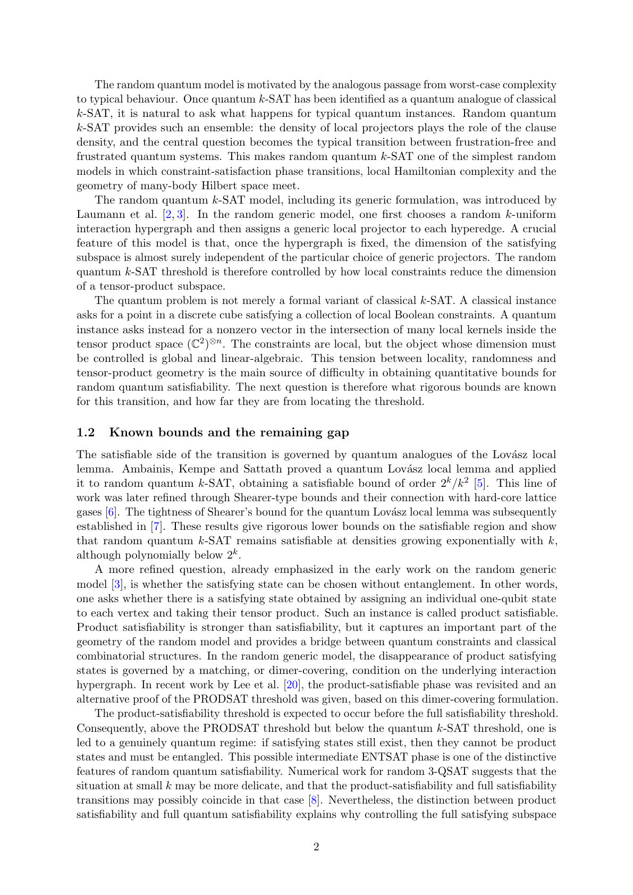
<figcaption class="paper-figure-caption"><b>Fig 1.</b> Low-resolution page preview, page 2</figcaption>
</figure>
<figure class="paper-figure-card">
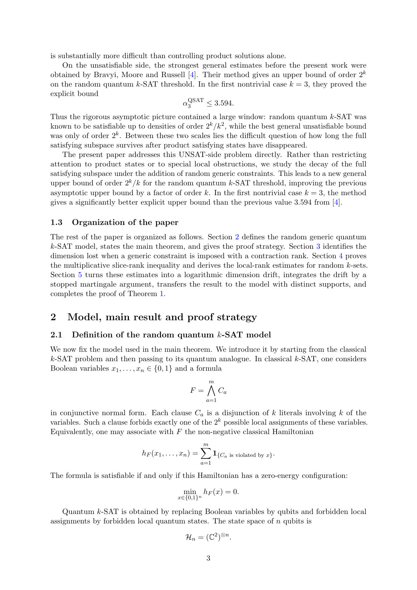
<figcaption class="paper-figure-caption"><b>Fig 2.</b> Low-resolution page preview, page 3</figcaption>
</figure>
<figure class="paper-figure-card">
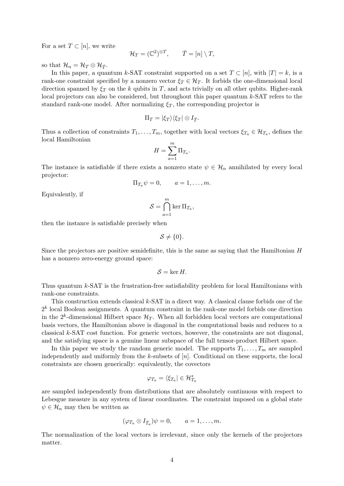
<figcaption class="paper-figure-caption"><b>Fig 3.</b> Low-resolution page preview, page 4</figcaption>
</figure>
<figure class="paper-figure-card">
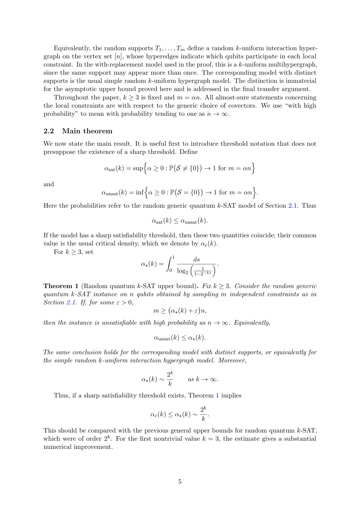
<figcaption class="paper-figure-caption"><b>Fig 4.</b> Low-resolution page preview, page 5</figcaption>
</figure>
<figure class="paper-figure-card">
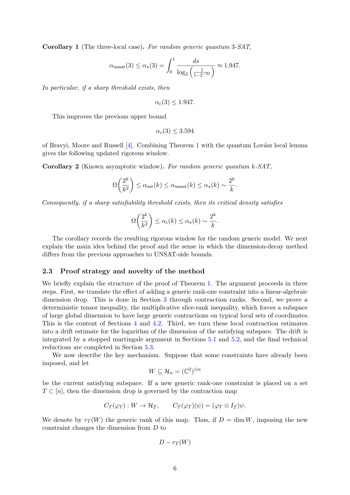
<figcaption class="paper-figure-caption"><b>Fig 5.</b> Low-resolution page preview, page 6</figcaption>
</figure>
</div>

<p><strong>Summary.</strong> This paper tackles the hard problem of finding the threshold where random quantum k-SAT instances transition from being satisfiable to unsatisfiable. By developing a dimension-decay analysis using advanced tensor methods, the authors derive a significantly improved upper bound for this critical threshold, $\alpha_{\star}(k) \sim 2^k/k$. This provides crucial quantitative insight into the physics of highly constrained quantum systems.</p>
<p><strong>Why it may be interesting.</strong> This work provides rigorous theoretical bounds on the complexity of quantum constraint satisfaction problems, which are central to understanding ground states in frustrated quantum many-body systems.</p>
<details>
<summary>Detailed structure</summary>
<p><strong>Main problem.</strong> The primary goal is determining the quantitative location of the satisfiability threshold for random quantum k-SAT instances.</p>
<p><strong>Main result.</strong> The authors establish a new upper bound on this threshold, showing it scales as $2^k/k$, significantly improving previous asymptotic estimates.</p>
<p><strong>Method.</strong> The proof combines geometric formulation with a dimension-decay analysis of the satisfying subspace, utilizing a multiplicative Shearer-type inequality for tensor-product subspaces.</p>
<p><strong>Model / system.</strong> The model is random quantum k-SAT, which serves as a quantum analogue to classical constraint satisfaction problems and models frustration-free local Hamiltonians. Satisfiability requires finding a non-zero state in the kernel of the local Hamiltonian projectors.</p>
<p><strong>Key observables.</strong> Dimension of the satisfying subspace ($S$), satisfiability threshold ($\alpha_c(k)$), and contraction ranks ($r_T(W)$).</p>
<p><strong>Important parameters / regimes.</strong> The constraint size $k$, the number of constraints relative to system size ($m/n = \alpha$), and the critical density $\alpha_{\star}(k)$.</p>
<p><strong>Assumptions / limitations.</strong> The analysis relies on the 'generic' nature of the random local constraints, meaning results hold outside sets of measure zero.</p>
<p><strong>Paper structure.</strong> The paper builds from defining the problem (quantum k-SAT threshold) to developing key mathematical tools (Shearer-type inequality, dimension drop lemma), and finally applying a stopped martingale/drift analysis to derive the asymptotic bound $\alpha_{\star}(k)$.</p>
</details>
<details>
<summary>Abstract</summary>
<p>Random quantum satisfiability is a natural quantum analogue of random constraint satisfaction and a basic model for frustration-free local Hamiltonians. Despite extensive work on its satisfiable and unsatisfiable regimes, the quantitative location of the random quantum \(k\)-SAT threshold has remained poorly understood, with the best general upper bounds leaving a large gap to the known lower bounds. In this paper we prove a new upper bound on the satisfiability threshold of random quantum \(k\)-SAT. Our result improves the previously known asymptotic upper bound by a factor of order \(k\), giving a bound of order \(2^k/k\). The improvement is also significant at small values of \(k\); in particular, for random quantum \(3\)-SAT we obtain a substantially smaller explicit upper bound than the one previously available. The proof combines the geometric formulation of generic quantum satisfiability with a dimension-decay analysis of the full satisfying subspace. The key input is a multiplicative Shearer-type inequality for tensor-product subspaces, which quantifies how global dimension forces nontrivial local dimension on typical sets of qubits.</p>
</details>
<p><sub><a href="#top">↑ back to top</a></sub></p>

<p><a id="paper-2607.24282"></a></p>
<h3 id="coherence-as-a-resource-for-math372math-box-and-quantum-pigeonhole-paradoxes"><a href="http://arxiv.org/abs/2607.24282v1">Coherence as a resource for $N$-box and quantum pigeonhole paradoxes</a></h3>
<p><strong>Authors:</strong> Som Kanjilal, Rafael Wagner, Ernesto F. Galvão<br>
<strong>Type:</strong> theory · <strong>Category:</strong> other · <strong>PDF:</strong> <a href="https://arxiv.org/pdf/2607.24282v1">https://arxiv.org/pdf/2607.24282v1</a><br>
<strong>Analysis basis:</strong> full PDF text, analyzed in chunks
<strong>Topic relevance:</strong> 🔥 <code>quantum measurements</code> <strong>4/5</strong> · <code>measurement-induced transitions</code> <strong>3/5</strong> · <code>Keldysh / 2PI / non-Gaussian methods</code> <strong>1/5</strong> · <code>driven-dissipative phase transition</code> <strong>1/5</strong> · <code>entanglement &amp; information structure</code> <strong>1/5</strong></p>
<div class="figure-strip-hint">↔ Scroll figures horizontally</div>
<div class="paper-figures-scroll">
<figure class="paper-figure-card">
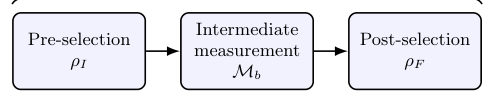
<figcaption class="paper-figure-caption"><b>Fig 1.</b> FIG. 1. The N-box PPS scenario. A system—interpreted as a particle which can be in N + 1 distinct boxes—is pre- pared in quantum state ρI. An intermediate measurement Mb = {Πb, 1 −Πb} with Πb = |b⟩⟨b|, interpreted as checking whether the particle is found in box b, follows. The measure- ment checking whether the particle is found in box N + 1 is excluded. Finally, the system is post-selected on ρF . In all runs, we assume that the post-selection onto ρF (successful or not) cannot yield information about which intermediate measurement was performed, a constraint captured by the non-disturbance condition from Eq. (14).</figcaption>
</figure>
<figure class="paper-figure-card">
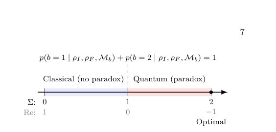
<figcaption class="paper-figure-caption"><b>Fig 2.</b> FIG. 2. The 3-box paradox as a function of Re (⟨Π3⟩w). Under the operational non-disturbance condition (14), the 3-box statistics obey Σ ≡P2 b=1 p(b | ρI, ρF , Mb) = 1 − Re  ⟨Π3⟩w  (see Theorem IV.2); the lower (grey) axis shows the corresponding Re  ⟨Π3⟩w  . The classicality bound Σ ≤1, Ineq. (12), is violated in the pink shaded “paradox” re- gion, where the excluded box has an anomalous weak value Re  ⟨Π3⟩w  &lt; 0. The logical three-box paradox saturates the algebraic maximum Σ = 2, i.e. ⟨Π3⟩w = −1.</figcaption>
</figure>
<figure class="paper-figure-card">
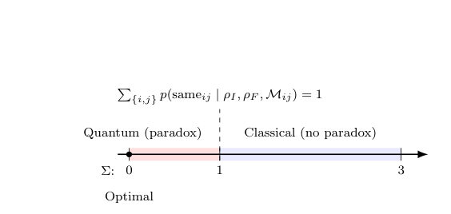
<figcaption class="paper-figure-caption"><b>Fig 3.</b> FIG. 3. The pigeonhole paradox as a function of Re  ⟨Θ⟩w  . Under the operational non-disturbance condi- tion (51), the pigeonhole statistics obey Σ ≡P</figcaption>
</figure>
</div>

<p><strong>Summary.</strong> This work investigates non-logical quantum paradoxes like the N-box and quantum pigeonhole scenarios within the framework of pre- and post-selection. The authors demonstrate that these paradoxes are not merely conceptual curiosities but require a quantifiable resource: coherence, which is evidenced by anomalies in weak measurement values. This clarifies how different forms of quantum nonclassicality manifest in inference problems.</p>
<p><strong>Why it may be interesting.</strong> It provides a rigorous, quantitative link between fundamental quantum resources (coherence) and observable paradoxes arising from measurement inference in open quantum systems, which is highly relevant to foundational studies in AMO physics.</p>
<details>
<summary>Detailed structure</summary>
<p><strong>Main problem.</strong> The paper analyzes general, non-logical Pre- and Post-selection (PPS) paradoxes, specifically the N-box and quantum pigeonhole paradoxes, to determine if coherence is a necessary resource for these paradoxes.</p>
<p><strong>Main result.</strong> It is shown that both the N-box and quantum pigeonhole paradoxes require coherence in both pre-selected and post-selected states relative to the intermediate measurement basis. This requirement is quantified by observing an anomaly in a single weak value.</p>
<p><strong>Method.</strong> The analysis involves generalizing existing paradoxes, calculating joint probabilities using trace operations, and establishing an equivalence between the paradox's existence and the presence of a weak-value anomaly.</p>
<p><strong>Model / system.</strong> The primary model is the N-box PPS scenario involving an $(N+1)$-level system. The process involves pre-selection ($
ho_I$), an intermediate measurement ($M_b$), and post-selection ($
ho_F$).</p>
<p><strong>Key observables.</strong> Weak value of an observable $\langle A 
angle_w$, Bargmann invariants, and the violation of summation inequalities related to joint probabilities.</p>
<p><strong>Important parameters / regimes.</strong> The number of boxes $N$ (generalized from the three-box paradox).</p>
<p><strong>Assumptions / limitations.</strong> The analysis extends previous work on mixed states and contrasts with logical PPS paradoxes linked to contextuality. The operational constraints defining the paradox must be met for the conclusion to hold.</p>
<p><strong>Figures summary.</strong> Figure 1 illustrates the N-box PPS scenario, detailing the sequence: preparation ($
ho_I$) $
ightarrow$ intermediate measurement ($M_b$) $
ightarrow$ post-selection ($
ho_F$).</p>
<p><strong>Paper structure.</strong> The paper develops by generalizing the three-box paradox to $N$ boxes, calculating joint probabilities under ABL rules, and then proving that the existence of the non-logical paradoxes necessitates coherence as a resource.</p>
</details>
<details>
<summary>Abstract</summary>
<p>Pre- and post-selection (PPS) paradoxes are striking demonstrations of quantum nonclassicality. Logical PPS paradoxes, where inferences made with the Aharonov-Bergmann-Lebowitz (ABL) rule are exactly 0 or 1, are linked to contextuality. Non-logical paradoxes lack this strong signature. In this work, we analyse more general, non-logical PPS scenarios involving mixed pre- and post-selected states. We show that two such scenarios, the $N$-box and quantum pigeonhole paradoxes, require coherence of both pre- and post-selected states in the basis of the intermediate measurement. This is done by showing each paradox holds if and only if there is weak-value anomaly for a single, paradox-specific operator, together with the fact that weak-value anomaly requires coherence. This clarifies the role of different notions of nonclassicality in these scenarios, highlighting the required quantitative departures from (strictly) classical explanations provided by incoherent sub-theories of quantum theory.</p>
</details>
<p><sub><a href="#top">↑ back to top</a></sub></p>

<p><a id="paper-2607.23630"></a></p>
<h3 id="effect-of-classical-noises-on-the-coherent-population-trapping-based-on-the-greens-function-approach-to-the-multiplicative-stochastic-processes"><a href="http://arxiv.org/abs/2607.23630v1">Effect of classical noises on the coherent population trapping based on the Green's function approach to the multiplicative stochastic processes</a></h3>
<p><strong>Authors:</strong> M. Mirzaee, B. Askari, Ali Motazedifard, A. Dalafi<br>
<strong>Type:</strong> theory · <strong>Category:</strong> other · <strong>PDF:</strong> <a href="https://arxiv.org/pdf/2607.23630v1">https://arxiv.org/pdf/2607.23630v1</a><br>
<strong>Analysis basis:</strong> full PDF text, analyzed in chunks
<strong>Topic relevance:</strong> 🔥 <code>Keldysh / 2PI / non-Gaussian methods</code> <strong>4/5</strong> · <code>methods for driven-dissipative</code> <strong>3/5</strong> · <code>correlated / nonlocal dissipation</code> <strong>1/5</strong> · <code>driven-dissipative phase transition</code> <strong>1/5</strong> · <code>interference shaping light</code> <strong>1/5</strong></p>
<div class="figure-strip-hint">↔ Scroll figures horizontally</div>
<div class="paper-figures-scroll">
<figure class="paper-figure-card">
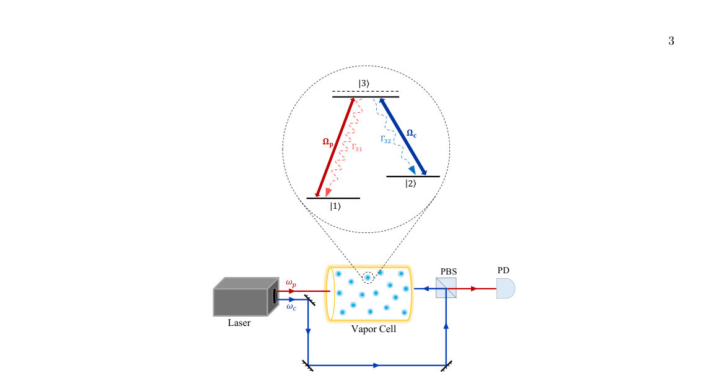
<figcaption class="paper-figure-caption"><b>Fig 1.</b> FIG. 1. Schematic representation of the experimental setup for detection of the CPT transmission resonance line when a gas of alkali-metal atoms are subjected to the radiation of two beams extracted from the same laser source so that the atomic levels form a Λ-shape structure. The excited level |3⟩of each interacting atom has the spontaneous emission rates of Γ31 and Γ32 to the hyperfine ground state levels |1⟩and |2⟩while the |1⟩→|2⟩transition is dipole forbidden. The two coupling and probe beams with frequencies ωc and ωp are counterpropagating in order to neutralize the Doppler broadening as much as possible.</figcaption>
</figure>
<figure class="paper-figure-card">
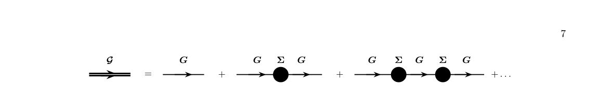
<figcaption class="paper-figure-caption"><b>Fig 2.</b> FIG. 2. Feynman diagram representation of the infinite series expansion of the interacting (noisy) GF. The interacting GF is demonstrated by the directional double line on the left hand side, while the noninteracting (noiseless) GF is represented by directional single lines and the self-energy contribution by solid black circles on the right hand side. The diagrams illustrate the repeated interaction processes appearing in the perturbative expansion of Eq.(40).</figcaption>
</figure>
<figure class="paper-figure-card">
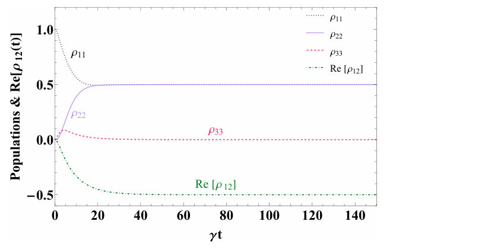
<figcaption class="paper-figure-caption"><b>Fig 3.</b> FIG. 3. Time evolution of the populations of energy levels as well as the coherence between ground state hyperfine levels in the absence of noises and broadening mechanisms with the initial condition where the atom is its ground state assuming γ12 = 0. The lasers parameters have been considered as Ωc = Ωp = 0.4γ, ∆c = 0, and δ = 0.</figcaption>
</figure>
<figure class="paper-figure-card">
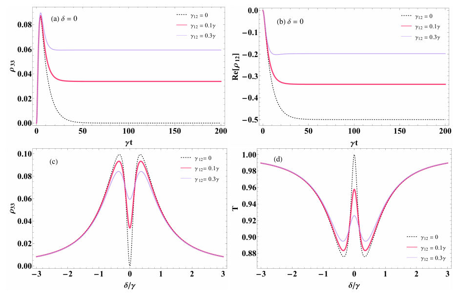
<figcaption class="paper-figure-caption"><b>Fig 4.</b> FIG. 4. (Color online) (a) Time evolution of ρ33(γt), and (b) time evolution of ρ12(γt), at δ = 0 for three different values of γ12 = 0, 0.1γ, 0.3γ. (c) The steady state of ρ33, and (d) the probe transmission T for three different values of γ12 = 0, 0.1γ, 0.3γ. The Rabi frequencies have been considered as Ωc(p) = 0.4γ, and the coupling laser detuning is ∆c = 0.</figcaption>
</figure>
<figure class="paper-figure-card">
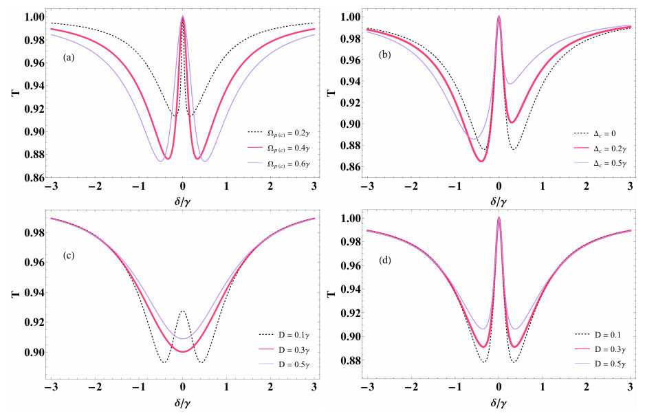
<figcaption class="paper-figure-caption"><b>Fig 5.</b> FIG. 5. (Color online) The probe transmission versus δ/γ in the absence of any noises and dephasing (γ12 = 0), (a) for three different values of Rabi frequencies Ωc(p) = 0.2γ, 0.4γ, 0.6γ at ∆c = 0, and (b) for three different values ∆c = 0, 0.2γ, 0.5γ at Ωc(p) = 0.4γ. (c) and (d) for three different values of Doppler width D = 0.1γ, 0.3γ, 0.5γ for Ωc(p) = 0.4γ with ∆c = 0. In (c) the two beams are copropagating and in (d) they are counterpropagating.</figcaption>
</figure>
</div>

<p><strong>Summary.</strong> The paper develops an advanced mathematical formalism using the Green's function approach to analyze open quantum systems subjected to classical multiplicative stochastic noises. It applies this theory to Coherent Population Trapping (CPT) in atomic clocks, demonstrating how noise from laser fluctuations and collisions broaden the resonance line shape. This provides a general framework applicable to any system with such noise sources.</p>
<p><strong>Why it may be interesting.</strong> This work provides a powerful, generalized theoretical tool—the Green's function approach for multiplicative noise—that moves beyond simpler white-noise approximations to model realistic decoherence sources in quantum optics experiments.</p>
<details>
<summary>Detailed structure</summary>
<p><strong>Main problem.</strong> The study investigates how classical multiplicative stochastic noises affect Coherent Population Trapping (CPT), a phenomenon vital for high-precision atomic clocks.</p>
<p><strong>Main result.</strong> A generalized Green's function formalism is developed that allows the calculation of system dynamics under colored noise, providing insights into how various broadening mechanisms destructively interact on the CPT resonance line shape.</p>
<p><strong>Method.</strong> The core method involves extending the Green's function approach from QFT to solve stochastic differential equations (SDEs) describing the noisy quantum evolution via infinite perturbative series approximations.</p>
<p><strong>Model / system.</strong> The system is an atomic ensemble exhibiting CPT in a $\Lambda$-scheme, driven by two coherent laser fields. The dynamics are modeled using multiplicative SDEs incorporating noise from laser phase and amplitude fluctuations, alongside standard broadening mechanisms like Doppler shifts and collisions.</p>
<p><strong>Key observables.</strong> CPT transmission resonance line shape (width, height, contrast); the interacting Green's function $\langle G(t) 
angle$.</p>
<p><strong>Important parameters / regimes.</strong> Noise bandwidth relative to system damping rate; correlation time scales of the colored noise ($\kappa$ vs. $\gamma$).</p>
<p><strong>Assumptions / limitations.</strong> The formalism assumes that for multiplicative colored noises, an approximation by a closed form is valid when the noise bandwidth significantly exceeds the system damping rate.</p>
<p><strong>Figures summary.</strong> Figure 1 schematically illustrates the experimental setup involving a laser source interacting with an atomic vapor cell to measure CPT.</p>
<p><strong>Paper structure.</strong> The paper introduces the general GF formalism for multiplicative stochastic processes, applies it to the specific case of CPT dynamics governed by master equations derived from SDEs, and then analyzes the resulting power spectra under different noise assumptions (white vs. colored).</p>
</details>
<details>
<summary>Abstract</summary>
<p>Inspired by the Green's function (GF) approach in quantum field theory (QFT) and many body physics, we have developed a mathematical formalism to investigate classical multiplicative stochastic processes. Based on this approach, the interacting GF of any dynamical system subjected to classical stochastic noises, which enter into the system equations of motion in a multiplicative way, can be obtained from the noninteracting (free of noise) GF through an infinite perturbative series which may converge to an exact closed form under special conditions. Using this formalism, we have studied the effects of classical noises of the driving laser on the coherent population trapping (CPT) which have a crucial role in the performance of CPT-based atomic clocks. We have shown that if the bandwidth of the colored noise is sufficiently larger than the system damping rate, the infinite series corresponding to the interacting GF can be approximated by the closed form. The presented formalism enables us to investigate all kinds of homogeneous and inhomogeneous broadening mechanisms on the CPT transmission resonance lineshape, including dephasing due to atomic collisions, power/Doppler broadenings, as well as the broadening mechanisms due to phase and amplitude fluctuations of driving laser and compared their destructive effect with each other. It should be emphasized that the presented formalism is applicable to any dynamical system with multiplicative stochastic noises and the CPT phenomenon is just a prototype for the application of the presented formalism in practice.</p>
</details>
<p><sub><a href="#top">↑ back to top</a></sub></p>

<p><a id="paper-2607.24624"></a></p>
<h3 id="experimental-protocol-fingerprinting-in-quantum-networks-via-physical-layer-side-channel-analysis"><a href="http://arxiv.org/abs/2607.24624v1">Experimental Protocol Fingerprinting in Quantum Networks via Physical Layer Side Channel Analysis</a></h3>
<p><strong>Authors:</strong> Lance Young, Contessa Wilburn, Carrie Houston, Blaine Keyton, Marwan Elawady, Mohamed Shaban, Muhammad Ismail<br>
<strong>Type:</strong> experiment · <strong>Category:</strong> quantum information and computing · <strong>PDF:</strong> <a href="https://arxiv.org/pdf/2607.24624v1">https://arxiv.org/pdf/2607.24624v1</a><br>
<strong>Analysis basis:</strong> full PDF text, analyzed in chunks
<strong>Topic relevance:</strong> 🔥 <code>QC/QI experiment</code> <strong>4/5</strong> · <code>quantum optics experiment</code> <strong>3/5</strong> · <code>entanglement &amp; information structure</code> <strong>1/5</strong> · <code>quantum measurements</code> <strong>1/5</strong></p>
<div class="figure-strip-hint">↔ Scroll figures horizontally</div>
<div class="paper-figures-scroll">
<figure class="paper-figure-card">
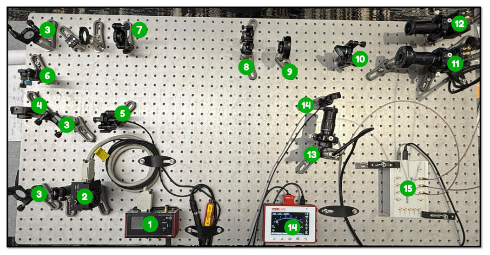
<figcaption class="paper-figure-caption"><b>Fig 1.</b> Fig. 1: Quantum communication testbed used for protocol fingerprinting via physical layer observations. The setup includes (1) laser driver, (2) 405 nm pump laser source, (3) kinematic mirrors for beam alignment, (4) 405 nm half-wave plate, (5) alignment laser, (6) temporal compensation crystal, (7) BBO nonlinear crystal for entangled photon generation, (8) spatial compensation crystals, (9) 808 nm half-wave plate for state preparation, (10) beam splitter for passive sampling, (11) single-photon avalanche photodetectors (signal photon receiver), (12) herald photon detector, (13) passive observer detector, (14) passive observer power meter, and (15) time-tagger.</figcaption>
</figure>
<figure class="paper-figure-card">
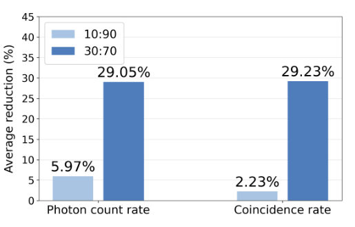
<figcaption class="paper-figure-caption"><b>Fig 2.</b> Fig. 2: Effect of passive sampling on photon count and coinci- dence rates. The 30:70 configuration introduces significantly higher reductions in photon count rate and coincidence rate compared to the 10:90 configuration.</figcaption>
</figure>
<figure class="paper-figure-card">
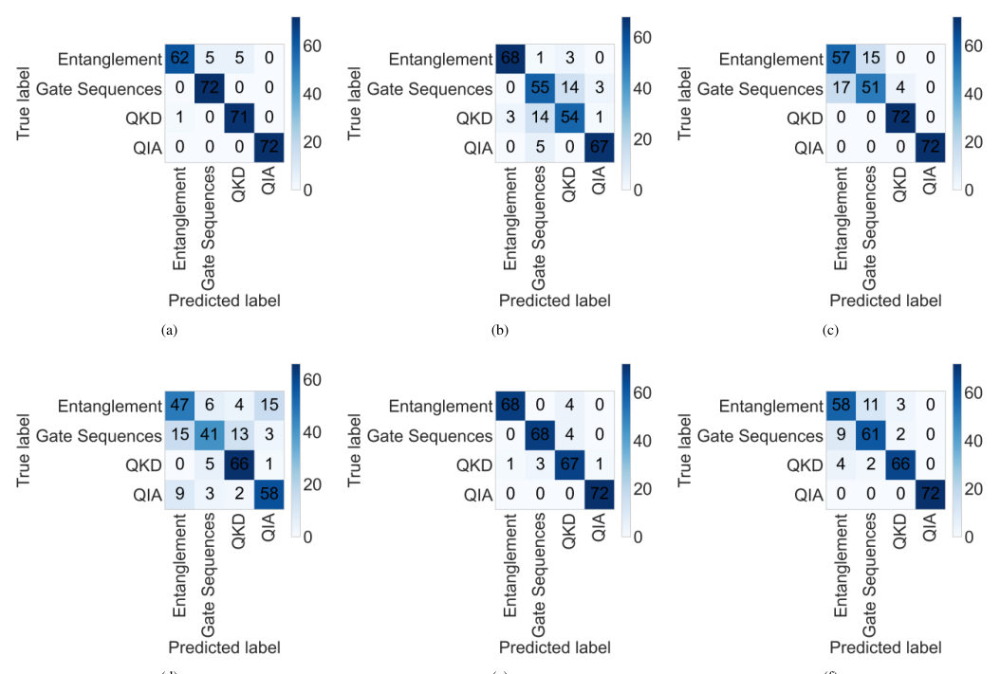
<figcaption class="paper-figure-caption"><b>Fig 3.</b> Fig. 3: Confusion matrices illustrating the impact of sampling ratio and feature type on protocol classification. (a) Time tagger features at 30:70, (b) power meter features at 30:70, (c) time tagger features at 10:90, (d) power meter features at 10:90, (e) combined features at 30:70, and (f) combined features at 10:90. Higher sampling ratios improve class separability, while time-resolved features provide stronger discriminative capability than intensity-based measurements. The combination of both feature types yields the highest overall performance.</figcaption>
</figure>
<figure class="paper-figure-card">
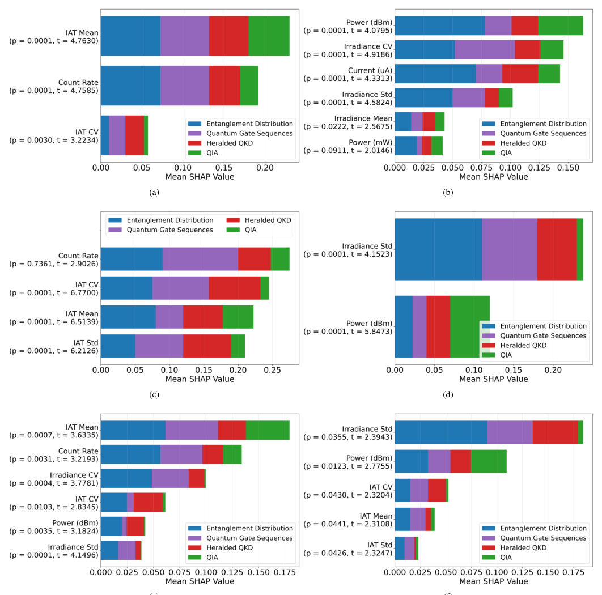
<figcaption class="paper-figure-caption"><b>Fig 4.</b> Fig. 4: SHAP feature importance analysis for different sampling configurations and feature sets: (a) 10:90 time tagger, (b) 10:90 power meter, (c) 30:70 time tagger, (d) 30:70 power meter, (e) 10:90 combined, and (f) 30:70 combined.</figcaption>
</figure>
</div>

<p><strong>Summary.</strong> This work experimentally demonstrates that quantum communication protocols can be identified by passively monitoring the physical characteristics of the transmitted optical signal. By analyzing photon arrival statistics and power fluctuations, researchers achieved high classification accuracy even when only a fraction of the signal was observed. This reveals a significant side-channel vulnerability in quantum networks, necessitating new security considerations for future quantum infrastructure.</p>
<p><strong>Why it may be interesting.</strong> It provides concrete experimental evidence of information leakage from quantum processes based purely on physical layer observables (timing/power), which is crucial for designing physically secure quantum hardware.</p>
<details>
<summary>Detailed structure</summary>
<p><strong>Main problem.</strong> The study investigates whether different quantum communication protocols leave distinguishable physical signatures detectable through passive side channel analysis.</p>
<p><strong>Main result.</strong> Protocol identity can be inferred with high accuracy (up to 96%) by analyzing physical layer features, demonstrating a new information leakage channel in quantum networks.</p>
<p><strong>Method.</strong> A data-driven framework using deep learning models classifies protocols based on passively collected physical measurements from the optical signal.</p>
<p><strong>Model / system.</strong> The experiment uses a polarization-entangled photon link to realize and test four distinct quantum communication protocols: entanglement distribution, gate sequences, QKD, and QIA.</p>
<p><strong>Key observables.</strong> Single photon detection statistics (time tagger features like IAT), optical power measurements (power meter features), and coincidence counts.</p>
<p><strong>Important parameters / regimes.</strong> Sampling ratios (e.g., 30:70 vs 10:90) defining the fraction of the signal observed by the passive tap.</p>
<p><strong>Assumptions / limitations.</strong> The observer can only passively access a fraction of the optical signal via tapping, without directly measuring or disturbing the encoded quantum states.</p>
<p><strong>Figures summary.</strong> Figures illustrate confusion matrices showing performance vs. sampling ratio/feature type, and SHAP analyses confirming that timing features are dominant discriminators over intensity measurements.</p>
<p><strong>Paper structure.</strong> The paper establishes the gap in security analysis (physical side channels), models the passive observation threat, experimentally implements multiple protocols on a photon link, develops a data-driven classification framework using time/power statistics, and quantifies the achievable fingerprinting accuracy.</p>
</details>
<details>
<summary>Abstract</summary>
<p>Quantum communication is a key enabler of next-generation networks, leveraging quantum entanglement to enable a new class of information exchange. While prior work has focused on the theoretical analysis of communication protocols, their exposure to physical layer side channel analysis remains largely unexplored. In classical systems, side channel analysis has been shown to reveal sensitive information without accessing the underlying data, raising the question of whether similar risks exist in quantum networks. In this work, we investigate whether different quantum communication protocols exhibit distinguishable signatures that can be inferred through passive side channel observations. We consider a threat model in which an observer accesses only a fraction of the optical signal without directly measuring the encoded quantum states. Under this setting, we experimentally examine four representative protocols, namely entanglement distribution, quantum gate sequences, heralded quantum key distribution, and quantum identity authentication, realized on a polarization entangled photon link. Observable physical layer features, including single photon detection statistics and optical power measurements, are collected and used to construct protocol fingerprints. We develop a data-driven framework for protocol identification based on these observations. Our results show that protocol identity can be inferred with accuracy reaching up to 96% under 30:70 sampling configuration/optical tapping, while remaining distinguishable at 10:90 with accuracy ranging from 70-89%. Bell inequality measurements confirm that the sampling/tapping process preserves entanglement, validating the non-destructive nature of the observation model. These findings demonstrate that side channel analysis can expose protocol-level information without disrupting quantum correlations, introducing new security considerations.</p>
</details>
<p><sub><a href="#top">↑ back to top</a></sub></p>

<p><a id="paper-2607.23413"></a></p>
<h3 id="highly-integrated-quantum-key-distribution-transmitter-enabled-by-silicon-photonics"><a href="http://arxiv.org/abs/2607.23413v1">Highly integrated quantum key distribution transmitter enabled by silicon photonics</a></h3>
<p><strong>Authors:</strong> Rende Liu, Yan-Lin Tang, Cheng-Guang Dong, Yan Ma, Guo-Qing Liu, Zhi-Lin Xie, Shuai Li, Mi Zou, Hao Liang, Shi-biao Tang<br>
<strong>Type:</strong> experiment · <strong>Category:</strong> quantum information and computing · <strong>PDF:</strong> <a href="https://arxiv.org/pdf/2607.23413v1">https://arxiv.org/pdf/2607.23413v1</a><br>
<strong>Analysis basis:</strong> full PDF text, analyzed in chunks
<strong>Topic relevance:</strong> 🔥 <code>QC/QI experiment</code> <strong>4/5</strong> · <code>quantum optics experiment</code> <strong>3/5</strong> · <code>interference shaping light</code> <strong>1/5</strong> · <code>quantum measurements</code> <strong>1/5</strong></p>
<div class="figure-strip-hint">↔ Scroll figures horizontally</div>
<div class="paper-figures-scroll">
<figure class="paper-figure-card">
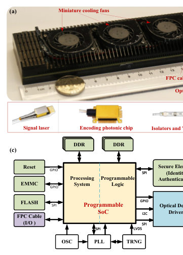
<figcaption class="paper-figure-caption"><b>Fig 1.</b> Fig. 1. (a) Photograph of the QKD transmitter; (b) Schematic of the optical subsystem (quantum and synchronization channels); pink regions are integrated on the silicon photonic chip. (c) Block diagram of the electronic subsystem. (d) Microscope image of the encoding silicon photonic chip.</figcaption>
</figure>
<figure class="paper-figure-card">
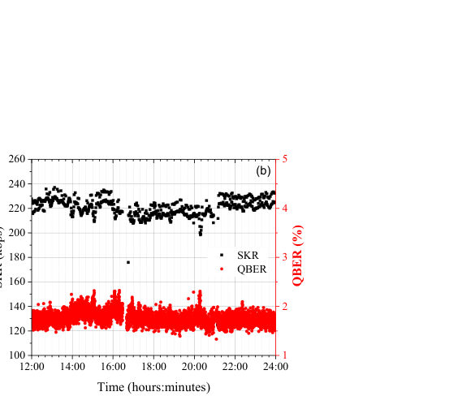
<figcaption class="paper-figure-caption"><b>Fig 2.</b> Fig. 3. (a)Simulated secret-key rate (SKR) as a function of transmission distance, together with experimental results at 51.3 km and 101.8 km; (b) SKR and QBER measured during a 12-hour continuous operation over 51.3 km of standard single-mode fiber.</figcaption>
</figure>
</div>

<p><strong>Summary.</strong> This paper presents a novel, highly integrated standalone transmitter for Quantum Key Distribution (QKD) that overcomes the bulk limitations of current rack-mounted systems. By combining monolithic silicon photonics with an embedded System-on-Chip, they achieved practical key rates over tens of kilometers in a dramatically reduced physical footprint. This work marks a significant engineering milestone toward commercializing compact QKD hardware.</p>
<p><strong>Why it may be interesting.</strong> This work is highly relevant to quantum optics and photonic QI as it tackles the engineering challenge of scaling up quantum communication protocols from lab benches to field-deployable devices using advanced silicon photonics integration techniques.</p>
<details>
<summary>Detailed structure</summary>
<p><strong>Main problem.</strong> The large size, cost, and complexity of current Quantum Key Distribution (QKD) hardware hinder its widespread deployment.</p>
<p><strong>Main result.</strong> The authors demonstrated a highly integrated, standalone QKD transmitter that achieves practical key rates comparable to conventional systems while being significantly smaller than rack-mounted equipment.</p>
<p><strong>Method.</strong> They employed a hybrid integration strategy combining monolithic silicon photonics for quantum state preparation with an external programmable System-on-Chip (SoC) for real-time protocol execution and control.</p>
<p><strong>Model / system.</strong> The system is a standalone QKD transmitter built around a silicon photonic encoding chip, integrating components like DFB lasers, MEMS-VOA, and the entire BB84 post-processing chain onto a compact board-level platform.</p>
<p><strong>Key observables.</strong> Secure key rate (SKR) of 219.1 kbps over 51.3 km; stable operation maintained over continuous 12-hour tests.</p>
<p><strong>Important parameters / regimes.</strong> Transmitter volume: $167 	imes 56 	imes 21 	ext{ mm}^3$ ($\sim 0.2 	ext{ dm}^3$), representing a reduction of $>30	imes$ compared to 1U rack systems.</p>
<p><strong>Assumptions / limitations.</strong> The reported key rates are considered conservative as they assume a deployment-oriented receiver architecture, which differs from ideal laboratory setups.</p>
<p><strong>Figures summary.</strong> Figures show photographs and schematics of the integrated transmitter, block diagrams detailing optical and electronic subsystems, and plots illustrating SKR vs. distance and QBER stability over time.</p>
<p><strong>Paper structure.</strong> The paper introduces the problem of QKD deployment limitations, details the hybrid architecture integrating photonics (SiPh) and electronics (SoC), presents performance measurements (key rates/stability), and concludes by positioning this work as a major step toward compact, deployable hardware.</p>
</details>
<details>
<summary>Abstract</summary>
<p>Quantum key distribution (QKD) provides information-theoretic security independent of computational assumptions, yet the bulk and cost of current systems hinder large-scale deployment. Although integrated photonic technologies have enabled highly integrated QKD chips, practical QKD transmitters are still predominantly implemented as rack-mounted systems. Here, we demonstrate a highly integrated standalone QKD transmitter that integrates all essential functionalities required for practical QKD operation within a compact platform built around a silicon photonic encoding chip. The transmitter occupies only $167 \times 56 \times 21~\mathrm{mm}^3$ ($\sim 0.2~\mathrm{dm}^3$), comparable in size to a half-height, half-width PCIe card and more than 30 times smaller in volume than a conventional 1U rack-mounted system. Paired with a conventional discrete-component receiver, it achieves a secure key rate of 219.1 kbps over 51.3 km of standard single-mode fiber, with performance comparable to that of conventional discrete-component implementations. This work bridges the gap between photonic chip integration and deployable QKD hardware, marking an important step toward transitioning QKD transmitters from conventional rack-mounted equipment to compact board-level platforms.</p>
</details>
<p><sub><a href="#top">↑ back to top</a></sub></p>

<p><a id="paper-2607.23090"></a></p>
<h3 id="protocols-of-coherent-motion-control-for-an-interaction-driven-rydberg-gate"><a href="http://arxiv.org/abs/2607.23090v1">Protocols of coherent motion control for an interaction-driven Rydberg gate</a></h3>
<p><strong>Authors:</strong> Valentin Magro, Wojciech Adamczyk, Sylvain de Léséleuc<br>
<strong>Type:</strong> theory · <strong>Category:</strong> other · <strong>PDF:</strong> <a href="https://arxiv.org/pdf/2607.23090v1">https://arxiv.org/pdf/2607.23090v1</a><br>
<strong>Analysis basis:</strong> full PDF text, analyzed in chunks
<strong>Topic relevance:</strong> 🔥 <code>Rydberg arrays</code> <strong>4/5</strong> · <code>analog quantum simulation</code> <strong>1/5</strong> · <code>correlated cavity matter</code> <strong>1/5</strong> · <code>entanglement &amp; information structure</code> <strong>1/5</strong> · <code>non-equilibrium dynamics</code> <strong>1/5</strong></p>
<div class="figure-strip-hint">↔ Scroll figures horizontally</div>
<div class="paper-figures-scroll">
<figure class="paper-figure-card">
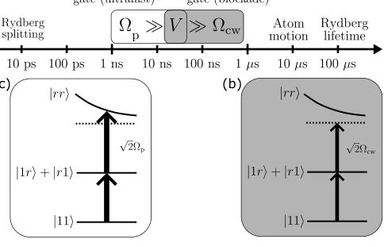
<figcaption class="paper-figure-caption"><b>Fig 1.</b> FIG. 1: Rydberg gates concepts. (a) Relevant dynamical timescales of the system. Energy-level diagrams in the blockade regime (b) and in the interaction-driven regime (c). In (b), the entangling phase is generated by the laser drive, whereas in (c) it is accumulated during the interaction time between the atoms.</figcaption>
</figure>
<figure class="paper-figure-card">
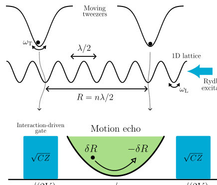
<figcaption class="paper-figure-caption"><b>Fig 2.</b> FIG. 2: Tools and concepts for interaction-driven gate implementation. (a) Schematic of movable optical tweez- ers adiabatically loaded into a one-dimensional optical lattice to precisely set interatomic distance R. The lat- tice with period λ/2 reduces positioning errors when its trapping frequency ωL exceeds that of the tweezers ωT. (b) Schematic of motion-echo protocol. The CZ gate is implemented in two steps, separated by half a motional oscillation period. In this protocol thermal and quantum fluctuations δR of the atomic positions within the trap- ping potentials cancel to first order.</figcaption>
</figure>
<figure class="paper-figure-card">
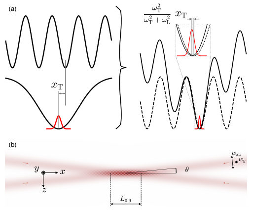
<figcaption class="paper-figure-caption"><b>Fig 3.</b> FIG. 3: (a) Combined tweezer–lattice trapping poten- tial for a tweezer displaced by xT from the lattice site. The resulting total potential shows that the shift of the trap minimum is strongly suppressed when ωL ≫ ωT . Ground-state harmonic oscillator wavefunctions are shown in light red, illustrating the reduction of quantum fluctuations δR0 at the lattice site. (b) Geometry of the two-dimensional lattice. Two standing waves are gener- ated by elliptical beams propagating in the x-z plane at angles ±θ with respect to the interaction axis x. The re- sulting summed potential confines the atoms along both x and z. Near the central axis the trap-frequency ra- tio is ωz,L/ωx,L = tan θ. The...</figcaption>
</figure>
<figure class="paper-figure-card">
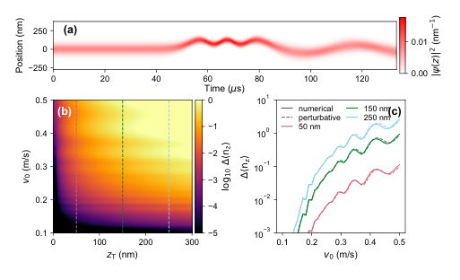
<figcaption class="paper-figure-caption"><b>Fig 4.</b> FIG. 4: Transport-induced motional excitation in the lat- tice gate zone. (a) Probability density of an atom trans- ported into and out of the lattice interaction region at v0 = 0.6 m/s with tweezer–lattice offset zT = 100 nm. The atom is pinned to the lattice minimum while travers- ing the interaction region; the residual oscillation after the passage reflects motional excitation. (b) Change in the mean vibrational occupation ∆⟨nz⟩after the full transport sequence, obtained from numerical propagation in the full time-dependent potential and averaged over a 10% Gaussian spread in lattice trap frequency. Atom is initially assumed to be in the motional ground state. (c) Numerical cuts from...</figcaption>
</figure>
<figure class="paper-figure-card">
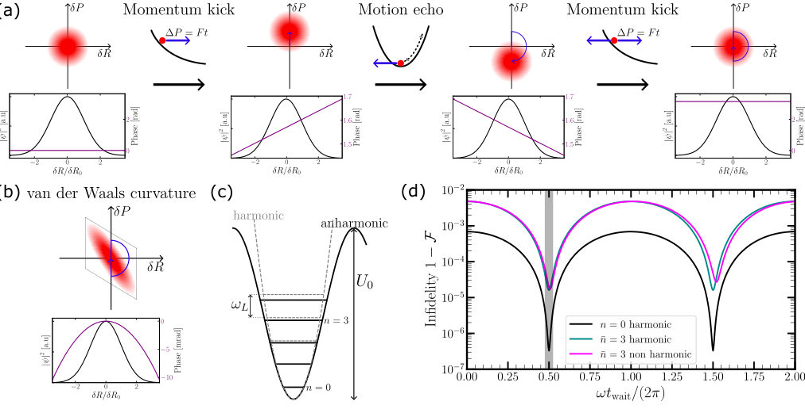
<figcaption class="paper-figure-caption"><b>Fig 5.</b> FIG. 5: Motion echo sequence. (a) Schematic of the interaction gate. Each panel shows both a phase-space represen- tation and the corresponding position-space probability density, with the associated phase profile. The initial state has zero phase. After the first interaction step, a global π/2 phase is acquired and the state is displaced along δP axis, corresponding to a linear phase gradient. The third step shows the state after a half period rotation in the harmonic trap. The final interaction adds an identical phase, reaching a total of π, and cancels the phase gradient, returning the state to its initial point in phase space. (b) Same sequence including the second order term in the...</figcaption>
</figure>
</div>

<p><strong>Summary.</strong> The paper presents advanced protocols for realizing high-fidelity two-qubit gates in neutral atom quantum computers by exploiting direct interaction-driven coupling rather than relying solely on blockade physics. By integrating coherent control techniques like motion-echo sequences within optical lattices, the authors suppress detrimental errors arising from atomic position uncertainty and thermal motion to levels required for fault-tolerant computation.</p>
<p><strong>Why it may be interesting.</strong> This work represents a sophisticated blend of quantum control theory applied to atomic physics. The detailed mathematical treatment of motion-echo sequences and the quantitative error budgeting against multiple noise sources (thermal, static) is highly relevant for designing next-generation quantum hardware.</p>
<details>
<summary>Detailed structure</summary>
<p><strong>Main problem.</strong> The primary goal is to achieve high-fidelity two-qubit entanglement gates for neutral atoms by moving beyond the limitations of the standard Rydberg-blockade regime.</p>
<p><strong>Main result.</strong> The proposed protocols, combining coherent control of atomic motion with optical lattices and echo sequences, enable ultrafast interaction-driven gates with error contributions from position noise below $10^{-4}$.</p>
<p><strong>Method.</strong> The authors derive theoretical models for the motional propagator under an echo sequence and analyze gate infidelity by calculating expectation values for thermal and Fock states.</p>
<p><strong>Model / system.</strong> The system involves neutral atoms trapped in a combination of optical tweezers and superimposed two-dimensional optical lattices, utilizing Rydberg excitations to mediate entanglement.</p>
<p><strong>Key observables.</strong> Gate fidelity ($F$), error contributions from position noise ($\Delta R$, $\delta R$), motional propagator expectation values, and residual displacement parameters ($\alpha_{	ext{res}}$).</p>
<p><strong>Important parameters / regimes.</strong> Target error $1-F \lesssim 10^{-4}$, required static precision $\Delta R < 4$ nm, low heating rate ($\Delta n < 0.01$), and short Rydberg interaction time ($\sim 10$ ns).</p>
<p><strong>Assumptions / limitations.</strong> The analysis assumes the ability to implement precise lattice loading and motion-echo sequences; error contributions are analyzed by treating various noise sources (static vs. thermal) independently.</p>
<p><strong>Figures summary.</strong> Figure S2 provides an error budget comparing different gate protocols based on interatomic separation $R$, quantifying contributions from lifetime, static/thermal motion in x, y, and z directions.</p>
<p><strong>Paper structure.</strong> The paper progresses by first establishing the need to overcome Rydberg-blockade limitations (Chunk 1), then detailing how lattice confinement and echo sequences suppress position errors ($\Delta R$ and $\delta R$) down to required nanometer precision (Chunk 2). Finally, it provides rigorous theoretical derivations of the motional propagator and error budget analysis for these advanced protocols (Chunks 3 &amp; 4).</p>
</details>
<details>
<summary>Abstract</summary>
<p>Generating entanglement between two Rydberg atoms is at the core of neutral-atom quantum computers. Current two-qubit gates operate in the Rydberg-blockade regime, in which the full strength of the van der Waals interaction between the two Rydberg atoms is not directly exploited, to avoid sensitivity to the position noise of the tweezer-trapped atoms, at the cost of a longer time spent in the Rydberg state. Here, we propose a set of techniques based on coherent control of the atomic motion obtained by combining optical tweezers and a two-dimensional optical lattice, and a sequence of multiple on/off pulses. The protocols keep the two-qubit gate error contribution from position noise below $10^{-4}$, heat the atom by less than~$Δn = 0.01$, while being robust to alignment errors of the potential up to $50$~nm and thermal excitation up to $\bar{n} = 3$. This toolbox opens the path for new two-qubit Rydberg gates directly, or partially, driven by the interaction, in which the atoms spend only $\sim 10$~ns in the Rydberg state, minimizing the increasingly dominant error source originating from its finite lifetime.</p>
</details>
<p><sub><a href="#top">↑ back to top</a></sub></p>

<p><a id="paper-2607.24299"></a></p>
<h3 id="quantum-level-crosstalk-characterization-of-a-16x16-mems-optical-switch-for-dynamic-quantum-communications"><a href="http://arxiv.org/abs/2607.24299v1">Quantum-Level Crosstalk Characterization of a 16x16 MEMS Optical Switch for Dynamic Quantum Communications</a></h3>
<p><strong>Authors:</strong> Persefoni Konteli, Nikolas Makris, Grigoris Anastasiou, Konstantinos Tsimvrakidis, George T. Kanellos<br>
<strong>Type:</strong> both · <strong>Category:</strong> quantum information and computing · <strong>PDF:</strong> <a href="https://arxiv.org/pdf/2607.24299v1">https://arxiv.org/pdf/2607.24299v1</a><br>
<strong>Analysis basis:</strong> full PDF text, analyzed in chunks
<strong>Topic relevance:</strong> 🔥 <code>QC/QI experiment</code> <strong>4/5</strong> · <code>quantum optics experiment</code> <strong>3/5</strong> · <code>quantum measurements</code> <strong>1/5</strong></p>
<div class="figure-strip-hint">↔ Scroll figures horizontally</div>
<div class="paper-figures-scroll">
<figure class="paper-figure-card">
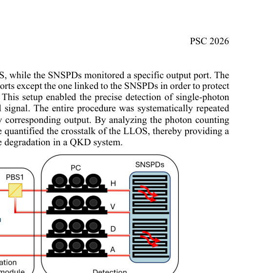
<figcaption class="paper-figure-caption"><b>Fig 1.</b> Fig. 1. The LLOS quantum-level crosstalk characterization setup.</figcaption>
</figure>
<figure class="paper-figure-card">
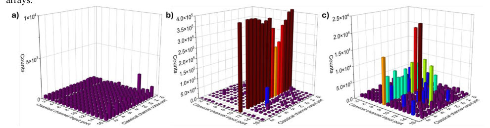
<figcaption class="paper-figure-caption"><b>Fig 2.</b> Fig. 2: Noise counts obtained for all classical input–output port combinations of a single quantum channel. The x- and y-axes represent the classical output and input ports, respectively, while the z-axis indicates the corresponding photon noise counts. Figures (a)–(c) illustrate different observed patterns, highlighting the non-uniform distribution of crosstalk-induced noise across the MEMS switch.</figcaption>
</figure>
<figure class="paper-figure-card">
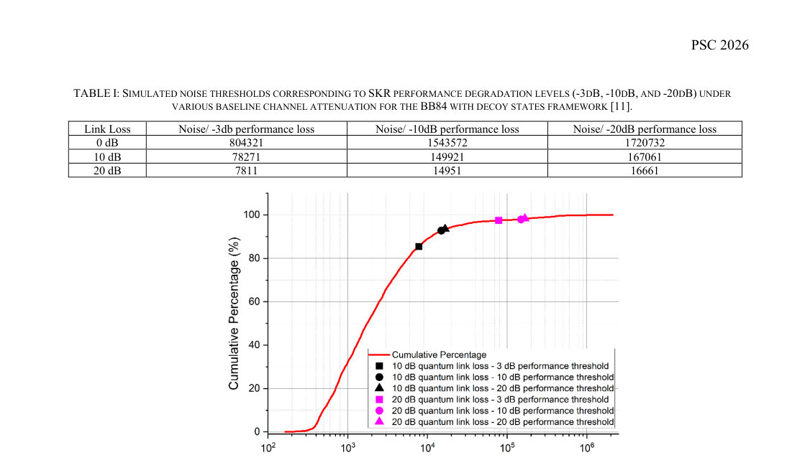
<figcaption class="paper-figure-caption"><b>Fig 3.</b> Fig. 3. ECDF of the measured crosstalk noise counts across all input–output port combinations. The curve represents the cumulative percentage of port combinations with noise counts below a given value. The markers denote simulated noise thresholds corresponding to SKR degradation levels of −3 dB, −10 dB, and −20 dB for baseline quantum channel losses of 10 dB (black color symbols) and 20 dB (magenta color symbols).</figcaption>
</figure>
</div>

<p><strong>Summary.</strong> The paper characterizes the quantum crosstalk noise generated by a commercial 16x16 MEMS optical switch when used for multi-user quantum communications. By measuring photon leakage and correlating this with the decoy-state BB84 QKD protocol, the authors demonstrate that while some port combinations suffer severe noise, the majority are compatible with maintaining high key rates even under significant channel attenuation.</p>
<p><strong>Why it may be interesting.</strong> This work directly addresses the engineering challenges of integrating macro-scale classical optical components into delicate quantum communication systems, providing crucial empirical data for network feasibility studies in quantum information science.</p>
<details>
<summary>Detailed structure</summary>
<p><strong>Main problem.</strong> The study characterizes quantum-level crosstalk introduced by commercial MEMS optical switches, which poses a potential limitation for implementing robust Quantum Key Distribution (QKD) networks.</p>
<p><strong>Main result.</strong> Most port configurations of the 16x16 MEMS switch are found to be compatible with quantum communication, supporting link budgets up to 20 dB, suggesting practical viability for dynamic QKD systems.</p>
<p><strong>Method.</strong> The authors performed systematic experimental measurements of photon leakage across all input-to-output combinations using SNSPDs and correlated these empirical results with theoretical impact analyses on the decoy-state BB84 protocol.</p>
<p><strong>Model / system.</strong> The platform is a commercial 16x16 MEMS Optical Low-Loss Switch (LLOS) used in conjunction with Superconducting Nanowire Single Photon Detectors (SNSPDs) for quantum signal detection. The analysis focuses on the performance of the decoy-state BB84 QKD protocol.</p>
<p><strong>Key observables.</strong> Crosstalk (photon leakage) measured in counts per second ($    ext{cps}$), Secret Key Rate ($ ext{SKR}$) degradation percentage, and Link Loss/Attenuation levels.</p>
<p><strong>Important parameters / regimes.</strong> Link budgets up to $20 	ext{ dB}$; specific noise thresholds corresponding to $    ext{SKR}$ degradation at $-3 	ext{ dB}$, $-10 	ext{ dB}$, and $-20 	ext{ dB}$.</p>
<p><strong>Assumptions / limitations.</strong> The analysis assumes the use of a C-band CW tunable laser source at $1550.12 	ext{ nm}$ and relies on the established framework of the decoy-state BB84 protocol for performance evaluation.</p>
<p><strong>Figures summary.</strong> Fig. 1 shows the experimental setup; Fig. 2 displays non-uniform noise counts across port combinations; Fig. 3 presents the ECDF comparing measured crosstalk against simulated $  ext{SKR}$ degradation thresholds for various channel losses.</p>
<p><strong>Paper structure.</strong> The paper introduces the problem of classical component crosstalk in quantum networks, details the experimental setup and measurement process (sweeping laser signals), presents the quantitative results showing non-uniform leakage patterns, and concludes with a theoretical impact analysis confirming overall compatibility up to 20 dB attenuation.</p>
</details>
<details>
<summary>Abstract</summary>
<p>We present an all-to-all quantum-level crosstalk characterization of a commercial 16x16 MEMS optical switch for multi-user quantum communications using SNSPDs, correlating experimental data with a theoretical impact analysis on the decoy-state BB84 QKD protocol.</p>
</details>
<p><sub><a href="#top">↑ back to top</a></sub></p>

<p><a id="paper-2607.22831"></a></p>
<h3 id="new-class-of-exactly-flat-topological-bands-compact-localised-states-protected-by-local-graph-topology"><a href="http://arxiv.org/abs/2607.22831v1">New class of exactly flat topological bands - compact localised states protected by local graph topology</a></h3>
<p><strong>Authors:</strong> Tamaghna Hazra<br>
<strong>Type:</strong> theory · <strong>Category:</strong> strongly correlated electrons · <strong>PDF:</strong> <a href="https://arxiv.org/pdf/2607.22831v1">https://arxiv.org/pdf/2607.22831v1</a><br>
<strong>Analysis basis:</strong> full PDF text, analyzed in chunks
<strong>Topic relevance:</strong> 🔥 <code>analog quantum simulation</code> <strong>4/5</strong> · <code>correlated cavity matter</code> <strong>1/5</strong> · <code>entanglement &amp; information structure</code> <strong>1/5</strong> · <code>non-equilibrium dynamics</code> <strong>1/5</strong></p>
<div class="figure-strip-hint">↔ Scroll figures horizontally</div>
<div class="paper-figures-scroll">
<figure class="paper-figure-card">
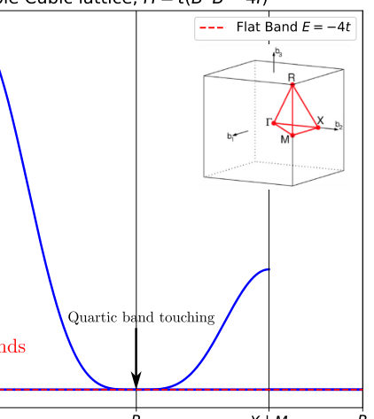
<figcaption class="paper-figure-caption"><b>Fig 1.</b> Figure 2: Bandstructure of the hopping Hamiltonian defined on the faces of a cubic lattice</figcaption>
</figure>
<figure class="paper-figure-card">
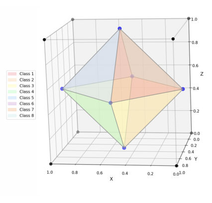
<figcaption class="paper-figure-caption"><b>Fig 2.</b> Figure 3: 8 distinct classes of faces of an FCC lattice, shown in the conventional unit cell</figcaption>
</figure>
<figure class="paper-figure-card">
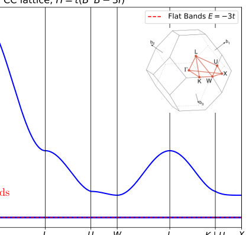
<figcaption class="paper-figure-caption"><b>Fig 3.</b> Figure 4: Bandstructure of the hopping Hamiltonian defined on the faces of an FCC lattice</figcaption>
</figure>
<figure class="paper-figure-card">
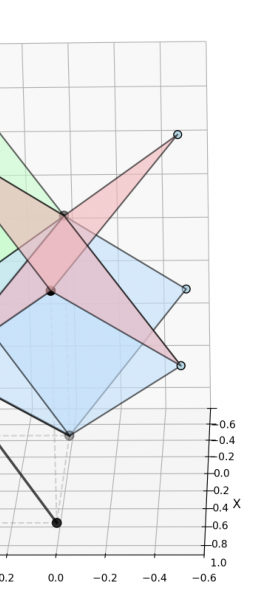
<figcaption class="paper-figure-caption"><b>Fig 4.</b> Figure 5: 6 distinct faces of a BCC lattice, shown in the conventional unit cell</figcaption>
</figure>
<figure class="paper-figure-card">
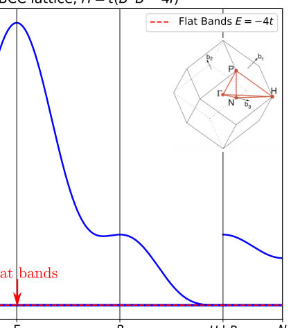
<figcaption class="paper-figure-caption"><b>Fig 5.</b> Figure 6: Bandstructure of the hopping Hamiltonian defined on the faces of a BCC lattice</figcaption>
</figure>
</div>

<p><strong>Summary.</strong> This work introduces a general method to construct exact flat band Hamiltonians on the faces of any arbitrary graph. By linking the resulting extensive ground-state degeneracy to the local topology via graph index theorems, the authors prove that these macroscopic degeneracies are topologically protected. This has broad implications for designing quantum systems with robust, non-dispersing quantum modes.</p>
<p><strong>Why it may be interesting.</strong> The focus on engineered flat bands in moiré heterostructures directly relates to creating platforms for strongly correlated physics, which is a major area of interest in condensed matter theory.</p>
<details>
<summary>Detailed structure</summary>
<p><strong>Main problem.</strong> The primary goal is constructing an infinite family of exact flat band Hamiltonians supported on the faces of arbitrary graphs to study exotic strongly correlated phases.</p>
<p><strong>Main result.</strong> The resulting extensive ground-state degeneracies are rigorously proven to be protected by the local topology of the face-graph connectivity, yielding compact localized states.</p>
<p><strong>Method.</strong> The construction uses a prescription based on the face-vertex incidence matrix (B) and generalizes concepts from the Atiyah-Singer index theorem via graph theory.</p>
<p><strong>Model / system.</strong> The model is built upon tight-binding Hamiltonians defined on the faces of arbitrary graphs, motivated by moiré heterostructures to engineer macroscopic degeneracies in quantum matter.</p>
<p><strong>Key observables.</strong> Extensive ground-state degeneracy (scaling with $|F| - |V|$), compact localized states, and topological protection.</p>
<p><strong>Important parameters / regimes.</strong> The hopping amplitudes ($t$) and the structure of the graph connectivity (faces $F$ vs. vertices $V$).</p>
<p><strong>Assumptions / limitations.</strong> The definition of a 'face' as an irreducible cycle is central to the construction; the analysis relies on the rank-nullity theorem applied to the incidence matrix.</p>
<p><strong>Figures summary.</strong> Figures illustrate hopping processes (intra/inter-orbital) and show bandstructures for various lattices (cubic, hexagonal), demonstrating flat bands at specific energies.</p>
<p><strong>Paper structure.</strong> The paper proceeds by defining faces on graphs, deriving the Hamiltonian using the face-vertex incidence matrix B, calculating the null space dimension via rank-nullity, and finally proving topological protection using graph theory generalizations of index theorems.</p>
</details>
<details>
<summary>Abstract</summary>
<p>Strongly correlated quantum matter is fundamentally defined by the tension between non-commuting quantum operators. Hamiltonians exhibiting macroscopic degeneracies are of general interest in this field because they imply an infinite susceptibility to any non-commuting perturbation. In moiré heterostructures, engineering such extensive degeneracies in the kinetic Hamiltonian creates a fertile garden for exotic strongly correlated phases of matter to emerge from the resulting flat bands. Here, we introduce a prescription to construct an infinite family of exact flat band Hamiltonians supported on the faces of arbitrary graphs. We demonstrate this algorithm on the faces of four Bravais lattices. Using a discrete graph generalization of the Atiyah-Singer index theorem, we prove that the extensive degeneracies of such face-graph Hamiltonians are protected by the local topology of the face-graph connectivity. The resulting macroscopic null spaces yield compact localised states that remain localised over time due to frustration in hopping pathways. We discuss the broad implications of such non-dispersing quantum modes in diverse settings, from arrested dynamics in quantum networks and quantum machine learning algorithms to Majorana-free topological quantum computation.</p>
</details>
<p><sub><a href="#top">↑ back to top</a></sub></p>

<p><a id="paper-2607.24068"></a></p>
<h3 id="quantum-entanglement-within-quarkonium"><a href="http://arxiv.org/abs/2607.24068v1">Quantum entanglement within quarkonium</a></h3>
<p><strong>Authors:</strong> Wenyu Zhang, Yiyu Zhou, Yang Li, Qun Wang<br>
<strong>Type:</strong> theory · <strong>Category:</strong> other · <strong>PDF:</strong> <a href="https://arxiv.org/pdf/2607.24068v1">https://arxiv.org/pdf/2607.24068v1</a><br>
<strong>Analysis basis:</strong> full PDF text, analyzed in chunks
<strong>Topic relevance:</strong> 🔥 <code>entanglement &amp; information structure</code> <strong>4/5</strong> · <code>Keldysh / 2PI / non-Gaussian methods</code> <strong>1/5</strong> · <code>methods for driven-dissipative</code> <strong>1/5</strong> · <code>non-equilibrium dynamics</code> <strong>1/5</strong></p>
<div class="figure-strip-hint">↔ Scroll figures horizontally</div>
<div class="paper-figures-scroll">
<figure class="paper-figure-card">
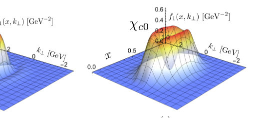
<figcaption class="paper-figure-caption"><b>Fig 1.</b> FIG. 1. 3D images of the unpolarized TMDs f1(x, k⊥) for ηc, η′ c and χc0.</figcaption>
</figure>
<figure class="paper-figure-card">
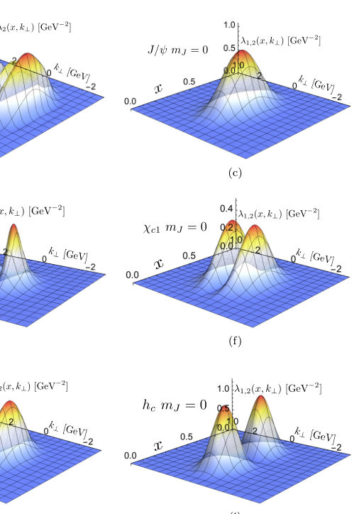
<figcaption class="paper-figure-caption"><b>Fig 2.</b> FIG. 2. 3D images of the eigenvalues of the quark spin density matrix λ1,2(x, k⊥) for J/ψ, χc1 and hc.</figcaption>
</figure>
<figure class="paper-figure-card">
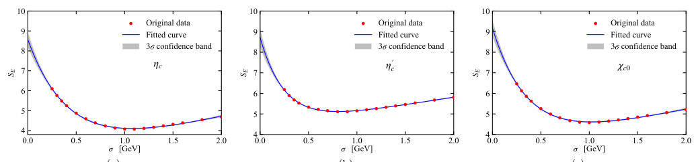
<figcaption class="paper-figure-caption"><b>Fig 3.</b> FIG. 3. Entanglement entropy between quark and anti-quark d.o.f’s in charmonium as a function of Gaussian wave packet width σ in the transverse direction. The entanglement entropy is calculated in the harmonic oscillator representation with Nmax = 8. The red scatter points represent the calculated results, the blue solid lines are the nonlinear fitting results, the gray bands denote the 99.73% confidence interval. The nonlinear fitting function is given by f(x) = ae−bx + cx + d.</figcaption>
</figure>
<figure class="paper-figure-card">
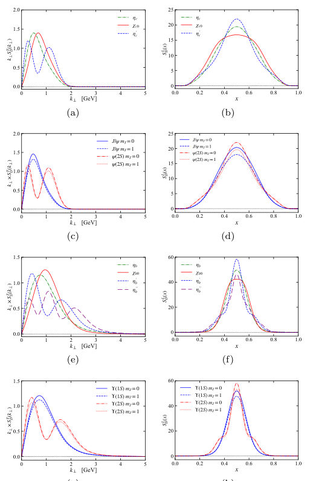
<figcaption class="paper-figure-caption"><b>Fig 4.</b> FIG. 5. Distribution of entanglement entropy in transverse and longitudinal momentum for charmonium (panels (a)-(d)) with P + 0 V = 396 GeV−2 and bottomonium (panels (e)-(h)) with P + 0 V = 3186 GeV−2.</figcaption>
</figure>
<figure class="paper-figure-card">
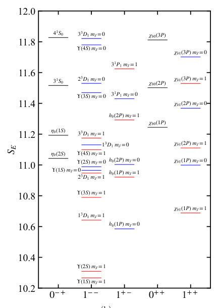
<figcaption class="paper-figure-caption"><b>Fig 5.</b> FIG. 4. The entanglement entropy between quark and anti-quark d.o.f’s for charmonium (top panel) with P + 0 V/(2π)3 = 396 [GeV−2] and bottomonium (bottom panel) with P + 0 V/(2π)3 = 3186 [GeV−2].</figcaption>
</figure>
</div>

<p><strong>Summary.</strong> This theoretical paper calculates the entanglement entropy within heavy quarkonium states ($   ext{charmonium}$ and $  ext{bottomonium}$) using a light-front Hamiltonian approach. It establishes that this quantum information measure provides a direct, quantitative link between fundamental quantum correlations and measurable partonic structure functions (TMDs). The results demonstrate how polarization affects the entanglement, offering a powerful new tool for probing nonperturbative QCD.</p>
<p><strong>Why it may be interesting.</strong> While focused on QCD structure rather than AMO systems, the methodology of using entanglement entropy as a diagnostic tool is highly relevant. The techniques developed for handling reduced density matrices in strongly coupled field theories could inspire analogous studies in open quantum systems or many-body physics where correlations are key.</p>
<details>
<summary>Detailed structure</summary>
<p><strong>Main problem.</strong> The study investigates quantifying quantum entanglement within heavy quarkonium bound states ($   ext{charmonium}$ and $  ext{bottomonium}$) to probe their nonperturbative internal structure.</p>
<p><strong>Main result.</strong> Entanglement entropy ($S_q$) is shown to be a novel observable that directly links quantum information measures to measurable partonic observables, such as transverse momentum dependent parton distributions (TMDs).</p>
<p><strong>Method.</strong> The authors employ the von Neumann entropy calculation on the reduced density matrix ($
ho_q$), derived within a nonperturbative light-front Hamiltonian framework using Basis Light-Front Quantization (BLFQ).</p>
<p><strong>Model / system.</strong> The system is heavy quarkonium ($qar{q}$), modeled using an effective Hamiltonian solved via the light-front Schrödinger equation. Calculations are performed in the valence Fock sector, utilizing Gaussian wavepackets and taking the Narrow Wavepacket Limit ($\sigma 	o 0$).</p>
<p><strong>Key observables.</strong> Entanglement entropy ($S_q$), reduced density matrix ($
ho_q$), and various TMDs (unpolarized $f_1$, polarized $h_\perp^1$, etc.).</p>
<p><strong>Important parameters / regimes.</strong> Polarization of the vector mesons, infrared cutoffs ($\Lambda_{	ext{IR}}$), and the wavepacket width parameter $\sigma$.</p>
<p><strong>Assumptions / limitations.</strong> The analysis relies on retaining only the valence Fock sector and taking the Narrow Wavepacket Limit ($\sigma 	o 0$) to simplify the density matrix diagonalization.</p>
<p><strong>Figures summary.</strong> Figure 1 illustrates 3D images of unpolarized TMDs for various charmonium states. Figure 2 shows 3D images of eigenvalues related to these TMDs for different quarkonium spin states.</p>
<p><strong>Paper structure.</strong> The paper develops the formalism by defining entanglement entropy in the light-front framework, deriving specific formulas for spin-0 and spin-1 mesons connecting $S_q$ to TMDs, evaluating these quantities for charmonium/bottomonium, and finally proposing a method to resolve infrared divergences.</p>
</details>
<details>
<summary>Abstract</summary>
<p>We investigate quark-antiquark entanglement in heavy quarkonium within a nonperturbative light-front Hamiltonian framework. By tracing over the antiquark degrees of freedom in the hadronic state vector, we construct the reduced density matrix of the quark subsystem and compute the associated von Neumann entropy. For spin-0 quarkonia, we show that this entropy reduces to the Shannon entropy of the unpolarized transverse momentum dependent parton distribution (TMD), up to constant color and spin contributions. For spin-1 quarkonia, we derive the explicit polarization dependence of the entropy and connect it to polarized and tensor-polarized TMDs. Using light-front wave functions obtained via basis light-front quantization (BLFQ), we evaluate the entanglement entropy for charmonium and bottomonium states, revealing a pronounced sensitivity to the polarization of vector mesons. Furthermore, we resolve the infrared parameter by matching the momentum-space entropy to a harmonic-oscillator representation. Ultimately, these results establish entanglement entropy as a novel probe of nonperturbative quarkonium structure, forging a direct link between quantum information measures and partonic observables.</p>
</details>
<p><sub><a href="#top">↑ back to top</a></sub></p>

<p><a id="paper-2607.23416"></a></p>
<h3 id="a-partial-trace-matrix-inequality-and-werner-state-distillability"><a href="http://arxiv.org/abs/2607.23416v1">A partial-trace matrix inequality and Werner-state distillability</a></h3>
<p><strong>Authors:</strong> Zhiwei Song, Lin Chen<br>
<strong>Type:</strong> theory · <strong>Category:</strong> quantum information and computing · <strong>PDF:</strong> <a href="https://arxiv.org/pdf/2607.23416v1">https://arxiv.org/pdf/2607.23416v1</a><br>
<strong>Analysis basis:</strong> full PDF text, analyzed in chunks
<strong>Topic relevance:</strong> 🔥 <code>entanglement &amp; information structure</code> <strong>4/5</strong> · <code>Keldysh / 2PI / non-Gaussian methods</code> <strong>1/5</strong> · <code>correlated / nonlocal dissipation</code> <strong>1/5</strong></p>
<div class="figure-strip-hint">↔ Scroll figures horizontally</div>
<div class="paper-figures-scroll">
<figure class="paper-figure-card">
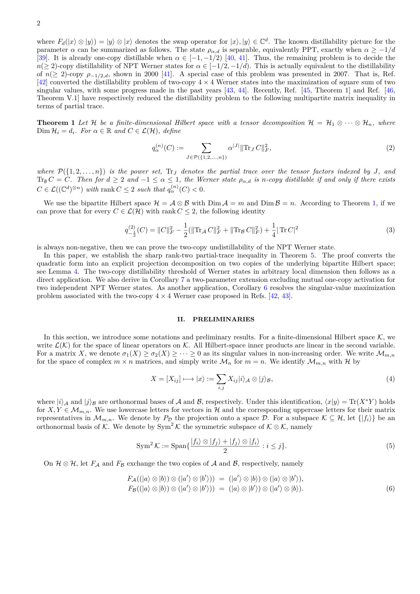
<figcaption class="paper-figure-caption"><b>Fig 1.</b> Low-resolution page preview, page 2</figcaption>
</figure>
<figure class="paper-figure-card">
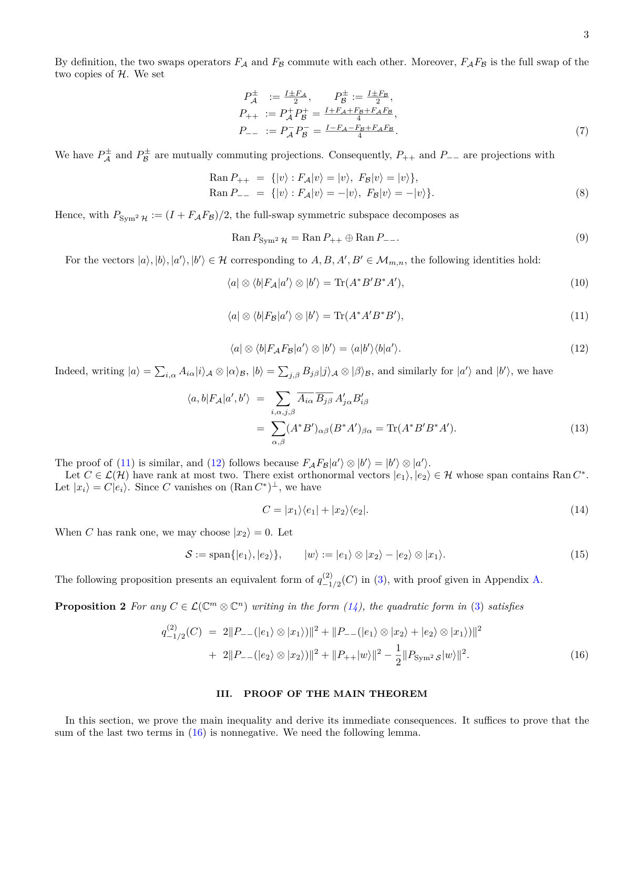
<figcaption class="paper-figure-caption"><b>Fig 2.</b> Low-resolution page preview, page 3</figcaption>
</figure>
<figure class="paper-figure-card">
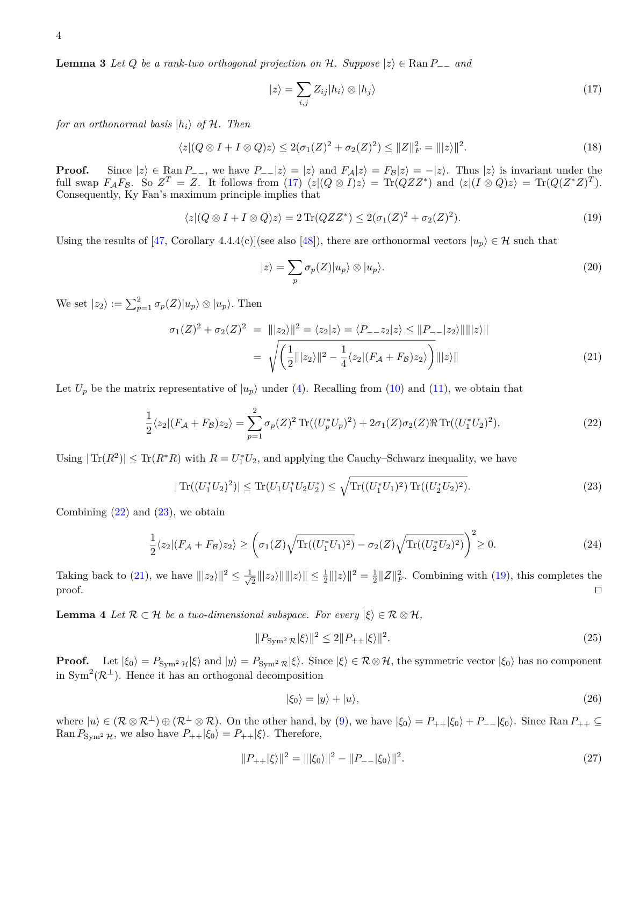
<figcaption class="paper-figure-caption"><b>Fig 3.</b> Low-resolution page preview, page 4</figcaption>
</figure>
<figure class="paper-figure-card">
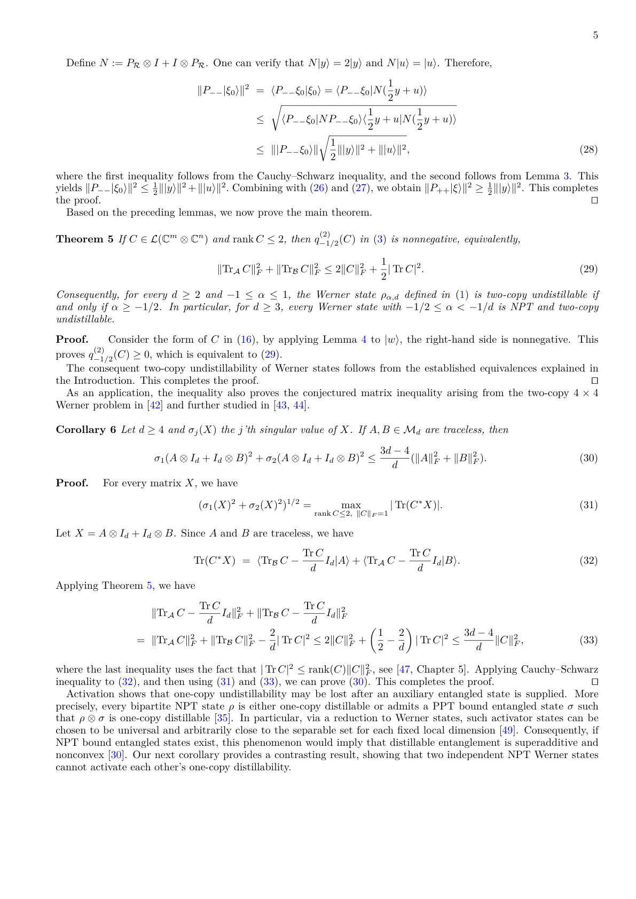
<figcaption class="paper-figure-caption"><b>Fig 4.</b> Low-resolution page preview, page 5</figcaption>
</figure>
<figure class="paper-figure-card">
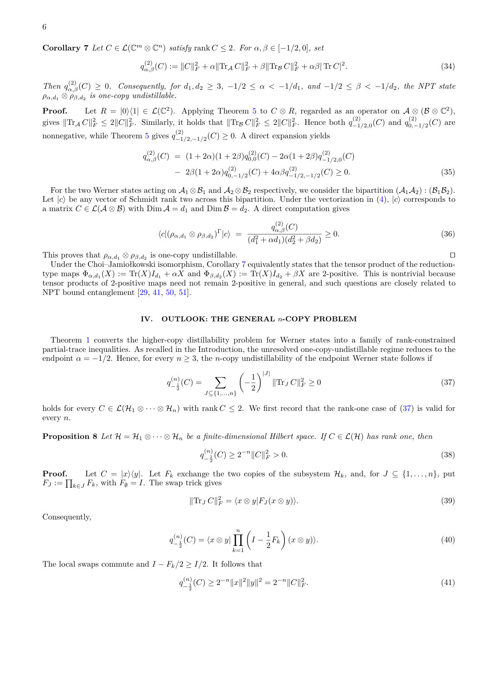
<figcaption class="paper-figure-caption"><b>Fig 5.</b> Low-resolution page preview, page 6</figcaption>
</figure>
</div>

<p><strong>Summary.</strong> This paper tackles the problem of entanglement distillability for Werner states by proving a novel bipartite partial-trace inequality applicable to rank-two matrices. This key result resolves the long-standing question regarding the two-copy undistillability of these states across arbitrary local dimensions. It advances the theoretical understanding of resource constraints in quantum information processing.</p>
<p><strong>Why it may be interesting.</strong> This work provides fundamental mathematical tools (the partial-trace inequality) that constrain entanglement distillation protocols, which is crucial for understanding resource theories in quantum information.</p>
<details>
<summary>Detailed structure</summary>
<p><strong>Main problem.</strong> The paper investigates the distillability of Werner states, specifically by proving a bipartite partial-trace inequality for matrices of rank at most two.</p>
<p><strong>Main result.</strong> They prove that NPT Werner states are two-copy undistillable in arbitrary local dimension, resolving a long-standing open problem in quantum information theory.</p>
<p><strong>Method.</strong> The core method involves deriving and applying sharp bipartite partial-trace inequalities related to the distillability criterion $q^{(n)}_\alpha(C)$, using techniques involving projection operators and quadratic forms.</p>
<p><strong>Model / system.</strong> The study focuses on bipartite quantum systems described by Werner states $
ho_{\alpha,d}$ acting on tensor products of local Hilbert spaces. The analysis uses abstract matrix formulations derived from the partial trace operation.</p>
<p><strong>Key observables.</strong> Distillability (determined by $q^{(n)}_\alpha(C)$), singular values ($\sigma_j(Z)$), and the Werner state parameter $\alpha$.</p>
<p><strong>Important parameters / regimes.</strong> The number of copies ($n$), the rank of the matrix ($rank \le 2$), and the local dimension ($d$).</p>
<p><strong>Assumptions / limitations.</strong> The analysis is based on the framework of Local Operations and Classical Communication (LOCC) for entanglement distillation.</p>
<p><strong>Paper structure.</strong> The paper builds from establishing a general partial-trace inequality for rank-two matrices, applying this to prove the two-copy undistillability result, and concluding with extensions regarding multi-parameter analysis and singular value maximization.</p>
</details>
<details>
<summary>Abstract</summary>
<p>Motivated by the equivalent partial-trace formulations of Werner-state distillability [P. Costa Rico, Lett. Math. Phys. 115, 47 (2025); S.-Y. Qi et al., Phys. Rev. A 110, 012406 (2024)], we prove a bipartite partial-trace inequality for every matrix of rank at most two. As applications, we prove the two-copy undistillability of NPT Werner states in arbitrary local dimension, thereby resolving this open problem highlighted in [P. Horodecki et al., PRX Quantum 3, 010101 (2022)]. We further prove a two-parameter extension of the matrix inequality and show that two individually one-copy-undistillable NPT Werner states cannot activate each other's one-copy distillability. We also resolve the singular-value maximization problem associated with the two-ququart case.</p>
</details>
<p><sub><a href="#top">↑ back to top</a></sub></p>

<p><a id="paper-2607.23574"></a></p>
<h3 id="generalized-mermin-inequalities-for-benchmarking-large-scale-ghz-states"><a href="http://arxiv.org/abs/2607.23574v1">Generalized Mermin Inequalities for Benchmarking Large-Scale GHZ States</a></h3>
<p><strong>Authors:</strong> Jianbin Cai, Junxiang Huang, Fynn Otto, Yuan Li, Carlos de Gois, Tao Jiang, Sirui Cao, Fangzheng Chen, Hao Fu, Jin Lin, Wei Xie, Naibin Zhou, Shibiao Tang, Xiang-Yang Li, Cheng-Zhi Peng, Xiao Yuan, Otfried Gühne, Ming Gong<br>
<strong>Type:</strong> both · <strong>Category:</strong> quantum information and computing · <strong>PDF:</strong> <a href="https://arxiv.org/pdf/2607.23574v1">https://arxiv.org/pdf/2607.23574v1</a><br>
<strong>Analysis basis:</strong> full PDF text, analyzed in chunks
<strong>Topic relevance:</strong> 🔥 <code>QC/QI experiment</code> <strong>4/5</strong> · <code>entanglement &amp; information structure</code> <strong>1/5</strong> · <code>quantum measurements</code> <strong>1/5</strong></p>
<div class="figure-strip-hint">↔ Scroll figures horizontally</div>
<div class="paper-figures-scroll">
<figure class="paper-figure-card">
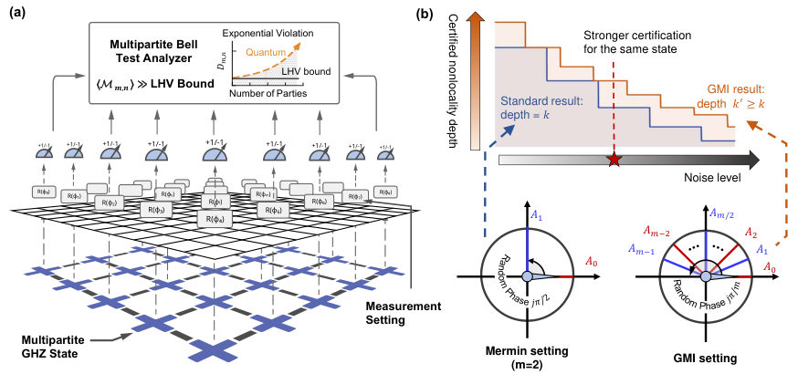
<figcaption class="paper-figure-caption"><b>Fig 1.</b> FIG. 1. Bell-test logic and measurement-space refinement. (a) Local equatorial rotations R(ϕk) are applied to an n-qubit GHZ state to measure the generalized Mermin operator ⟨Mm,n⟩. The inset shows exponential LHV violation with system size. (b) Increasing m can tighten the relevant bounds and deepen certification for the same noisy GHZ state.</figcaption>
</figure>
<figure class="paper-figure-card">
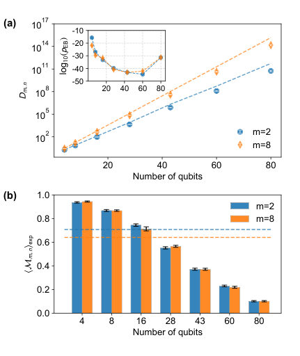
<figcaption class="paper-figure-caption"><b>Fig 2.</b> FIG. 3. Large-scale Bell violation and scaling perfor- mance. (a) Experimental Bell ratios Dexp m,n for the standard Mermin test (m = 2, blue circles) and the generalized Mermin test (m = 8, orange diamonds) up to n = 80. Dashed lines show the corresponding ideal scalings Did m,n = 1/Cm,n. Error bars denote 40× the standard error and are enlarged for vis- ibility because the unscaled errors are smaller than the sym- bols. The inset shows setting-level empirical-Bernstein up- per bounds against the LHV model as log10(pEB), with lower values indicating stronger rejection. Color coding follows the main panel. (b) Measured expectation values ⟨Mm,n⟩exp; col- ored dashed lines mark the...</figcaption>
</figure>
<figure class="paper-figure-card">
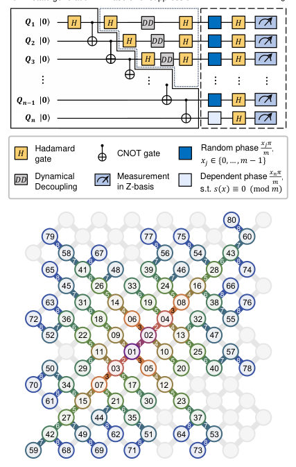
<figcaption class="paper-figure-caption"><b>Fig 3.</b> FIG. 2. GHZ preparation and hardware embedding. (a) Experimental sequence for GHZ-state generation (solid), phase-error suppression (dotted), and setting-dependent mea- surement of Eq. (1) (dashed). (b) The accompanying chip map shows the active qubits and compiled depth for the 80- qubit GHZ instance on the superconducting processor. The numbers on the links denote the sequence steps of entangling gates for generating the GHZ state, illustrating how the en- tangled region is built up step by step.</figcaption>
</figure>
<figure class="paper-figure-card">
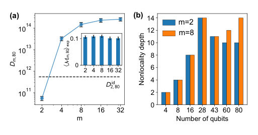
<figcaption class="paper-figure-caption"><b>Fig 4.</b> FIG. 4. Generalized Mermin advantage at fixed size and nonlocality depth certification. (a) Experimental Bell ratio for the 80-qubit GHZ state versus the number of set- tings m. The horizontal dashed line marks the ideal standard- Mermin value Did 2,80. The inset shows the corresponding ex- pectation values. Error bars denote 40× and 10× the stan- dard error in the main panel and inset, respectively. (b) Cer- tified nonlocality depth versus system size for m = 2 and m = 8.</figcaption>
</figure>
</div>

<p><strong>Summary.</strong> The paper proposes and experimentally validates generalized Mermin inequalities as an improved benchmark for testing large-scale GHZ states on superconducting processors. By incorporating an extra measurement setting parameter ($m$), the inequality strengthens its violation ratio and certifies a deeper nonlocality depth compared to standard tests. This provides a powerful, noise-robust tool for assessing quantum processor performance using only measured correlations.</p>
<p><strong>Why it may be interesting.</strong> This work directly addresses scalability in quantum benchmarking, providing a robust, resource-efficient method to certify nonlocality depth using only measured correlators, which is crucial for near-term noisy intermediate-scale quantum (NISQ) devices.</p>
<details>
<summary>Detailed structure</summary>
<p><strong>Main problem.</strong> The primary challenge is benchmarking large-scale quantum processors using multipartite Bell tests, which suffer from noise susceptibility and exponentially complex expressions.</p>
<p><strong>Main result.</strong> The authors introduce generalized Mermin inequalities that strengthen the Bell violation ratio and certify a higher nonlocality depth compared to standard methods, even when considering noise.</p>
<p><strong>Method.</strong> They developed a finite-setting generalized Mermin family of state-tailored Bell inequalities ($\mathcal{M}_{m,n}$) and tested them experimentally using randomized sampling on superconducting qubits.</p>
<p><strong>Model / system.</strong> The study focuses on Greenberger-Horne-Zeilinger (GHZ) states prepared on a programmable superconducting processor with up to 80 qubits. The theoretical framework involves generalizing Mermin operators by introducing an additional measurement setting dimension, $m$.</p>
<p><strong>Key observables.</strong> Bell violation ratio ($    ext{Did}_{m,n}$), certified nonlocality depth ($k$), and the expectation value of the generalized Mermin operator $\langle\mathcal{M}_{m,n}
angle$.</p>
<p><strong>Important parameters / regimes.</strong> System size $n$ (up to 80 qubits) and measurement setting number $m$ (generalized beyond standard $m=2$).</p>
<p><strong>Assumptions / limitations.</strong> The test relies solely on measured correlators and analytical bounds, avoiding readout correction or tomography. The locality and freedom-of-choice loopholes are noted as open.</p>
<p><strong>Figures summary.</strong> Figures compare Bell ratios for different settings ($m=2$ vs $m=8$) showing exponential scaling advantages; other figures detail the experimental sequence and the relationship between certified depth and system size.</p>
<p><strong>Paper structure.</strong> The paper first introduces the generalized Mermin inequality framework, derives analytic bounds comparing it to standard tests, details the experimental implementation on superconducting qubits (including error suppression), presents results showing improved Bell ratios and depth certification with increasing $m$, and concludes by analyzing the hierarchy of local bounds.</p>
</details>
<details>
<summary>Abstract</summary>
<p>Multipartite Bell tests provide a correlation-only route to benchmarking quantum processors, but their application at large scales is hindered by the rapid decay of many-body correlators under noise and exponentially many terms in conventional Bell expressions. Here we address these scalability obstacles by introducing a finite-setting generalized Mermin family of state-tailored Bell inequalities with analytic certification bounds, in which the measurement-setting number $m$ provides an additional certification dimension complementary to the system size $n$. We show that, for the powers-of-two setting choices considered here, increasing $m$ leaves the ideal normalized multipartite quantum value unchanged while lowering the relevant classical bounds, thereby strengthening the Bell-violation ratios and yielding an improved noise-robustness scaling compared to the standard Mermin inequality. We test this construction experimentally on a programmable superconducting processor by preparing Greenberger-Horne-Zeilinger (GHZ) states of up to 80 qubits. Using randomized sampling for direct Bell-operator estimation, we observe Bell ratios that grow exponentially with system size, certify a nonlocality depth of 14, and show that increasing $m$ strengthens both the Bell ratio and depth certification. All results are obtained solely from measured correlators and analytical bounds, without readout correction, tomography, or model-based mitigation. Generalized Mermin inequalities therefore provide a sharper Bell benchmark for noisy large-scale GHZ states.</p>
</details>
<p><sub><a href="#top">↑ back to top</a></sub></p>

<p><a id="paper-2607.23645"></a></p>
<h3 id="neural-network-learning-of-one-bit-protocols-for-qubit-measurement-simulation"><a href="http://arxiv.org/abs/2607.23645v1">Neural Network Learning of One-Bit Protocols for Qubit Measurement Simulation</a></h3>
<p><strong>Authors:</strong> Josep Escrig, Mani Zartab, Giulio Gasbarri, Estel Ferrer, Ramon Muñoz-Tapia, Gael Sentís<br>
<strong>Type:</strong> theory · <strong>Category:</strong> quantum information and computing · <strong>PDF:</strong> <a href="https://arxiv.org/pdf/2607.23645v1">https://arxiv.org/pdf/2607.23645v1</a><br>
<strong>Analysis basis:</strong> full PDF text, analyzed in chunks
<strong>Topic relevance:</strong> 🔥 <code>quantum measurements</code> <strong>4/5</strong> · <code>measurement-induced transitions</code> <strong>1/5</strong> · <code>methods for driven-dissipative</code> <strong>1/5</strong></p>
<div class="figure-strip-hint">↔ Scroll figures horizontally</div>
<div class="paper-figures-scroll">
<figure class="paper-figure-card">
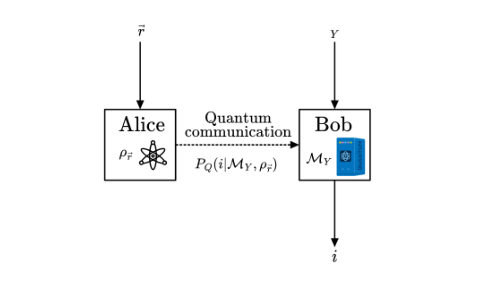
<figcaption class="paper-figure-caption"><b>Fig 1.</b> Figure 1. Quantum PM scenario. Alice prepares the qubit state ρ⃗r and sends it to Bob, who performs the POVM MY and reports the outcome i.</figcaption>
</figure>
<figure class="paper-figure-card">
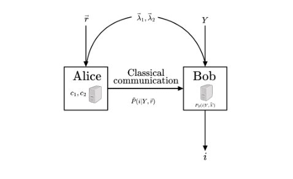
<figcaption class="paper-figure-caption"><b>Fig 2.</b> Figure 2. 2-bit classical simulation protocol of Ref. [10] for the PM scenario. Alice and Bob share ⃗λ1,⃗λ2 ∈S2, Alice sends the bits c1, c2, and Bob outputs i according to the protocol.</figcaption>
</figure>
<figure class="paper-figure-card">
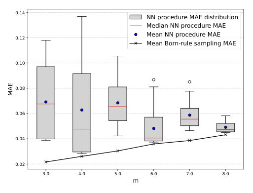
<figcaption class="paper-figure-caption"><b>Fig 3.</b> Figure 3. MAE of the probabilities calculated with the NN- procedure for POVMs with different numbers of elements m, compared with the mean MAE sampled directly from the Born rule.</figcaption>
</figure>
<figure class="paper-figure-card">
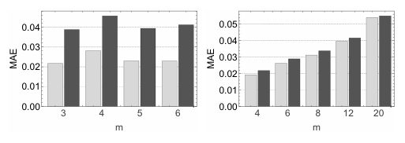
<figcaption class="paper-figure-caption"><b>Fig 4.</b> Figure 5. MAE of the NN-procedure (dark gray) and of the Born rule (light gray) for various e-POVMs with m outcomes, taking 4000 samples (value of N) and averaging over 1000 dif- ferent states (value of M). In the left plot, we have polygon configurations, while on the right plot we have regular poly- hedra.</figcaption>
</figure>
<figure class="paper-figure-card">

<figcaption class="paper-figure-caption"><b>Fig 5.</b> Fig. 5 compares the MAE of the NN-procedure with the MAE obtained by direct sampling from the Born rule for several such configurations. The comparison reveals a clear qualitative distinction. For polygonal configurations such as the triangle, square, pentagon, and hexagon, the MAE of the NN-procedure remains noticeably above the Born rule baseline. By contrast, for regular polyhedra configurations, the gap between the NN-procedure and the Born rule baseline is signif- icantly smaller. This suggests that the symmetric three- dimensional configuration of measurement vectors, rep- resenting an informationally complete POVM plays an important role. Overall, the numerical results support two...</figcaption>
</figure>
</div>

<p><strong>Summary.</strong> The paper explores the minimum classical resources needed to simulate qubit measurements. By using neural networks and rigorous analysis, the authors show that highly symmetric measurement settings allow for an accurate approximation of quantum statistics using only a single classical bit. This result highlights how exploiting geometric symmetries can drastically improve resource efficiency in quantum information tasks.</p>
<p><strong>Why it may be interesting.</strong> This work provides a concrete example of how leveraging underlying symmetries in quantum processes can lead to significant resource reductions (from 2 classical bits to 1 bit) for simulation tasks, which is crucial knowledge for designing efficient quantum communication protocols.</p>
<details>
<summary>Detailed structure</summary>
<p><strong>Main problem.</strong> The core problem is quantifying the minimum classical communication resources required to simulate quantum measurement statistics (qubit prepare-and-measure scenario). Specifically, it investigates if restricted families of measurements allow for an accurate 1-bit classical approximation.</p>
<p><strong>Main result.</strong> For highly symmetric and informationally complete POVMs, a single bit can achieve high average accuracy in simulating qubit measurements, and this protocol becomes exact in the continuous isotropic limit. This demonstrates that symmetry can significantly reduce the required classical communication compared to the general worst-case scenario (which requires 2 bits).</p>
<p><strong>Method.</strong> The authors employ a neural network procedure trained via minimizing Mean Squared Error (MSE) to learn candidate 1-bit protocols, which are then rigorously analyzed using mathematical bounding techniques to prove convergence rates.</p>
<p><strong>Model / system.</strong> The system is the qubit prepare-and-measure scenario, where quantum states $
ho$ and measurements $M=\{M_i\}$ are described in terms of Bloch vectors. The simulation compares true Born probabilities with those predicted by a classical protocol based on one bit of communication.</p>
<p><strong>Key observables.</strong> Mean Absolute Error (MAE) quantifying the average approximation accuracy; the convergence rate $O(1/\sqrt{t})$ for the error bound $   ext{L}<em 1 ext_-bit="ext{-bit">1(P</em>)$}}, P_{ ext{Q}</p>
<p><strong>Important parameters / regimes.</strong> The symmetry of the POVMs (e.g., regular polyhedra vs. polygons); the number of training samples ($M$) and shared randomness samples ($N$); the continuous limit ($t 	o \infty$).</p>
<p><strong>Assumptions / limitations.</strong> The analysis relies on approximating complex sums using integral bounds and asymptotic theorems related to spherical $t$-designs.</p>
<p><strong>Figures summary.</strong> Figures illustrate the comparison of MAE for different POVM structures (polyhedra vs. polygons) and show conditional response maps comparing NN outputs against analytical 1-bit protocols, demonstrating convergence.</p>
<p><strong>Paper structure.</strong> The paper progresses from establishing the general 2-bit requirement to using an NN procedure to probe restricted cases. It then analyzes how symmetry improves performance, culminating in rigorous mathematical proofs bounding the error of the derived 1-bit protocol as the measurement ensemble becomes continuous or highly symmetric.</p>
</details>
<details>
<summary>Abstract</summary>
<p>Communication complexity provides a natural framework for quantifying the classical resources required to reproduce quantum statistics. In the qubit prepare-and-measure scenario, two classical bits have been shown to be necessary and sufficient to simulate arbitrary qubit states and arbi- trary quantum measurements exactly. However, this result does not exclude the possibility that restricted families of measurements may admit accurate 1-bit classical approximations. We use a neural network procedure to demonstrate that a single bit can achieve high average accuracy for specific measurement families. A performance analysis of our neural network reveals that symmet- ric measurements with uniformly weighted elements, such as those forming regular polyhedra, are particularly amenable to this restricted communication. By analyzing the patterns learned by the neural network, we derive an analytical protocol that is extremely accurate for finite information- ally complete symmetric configurations and becomes exact in the limit of a continuous isotropic measurement.</p>
</details>
<p><sub><a href="#top">↑ back to top</a></sub></p>

<p><a id="paper-2607.24264"></a></p>
<h3 id="systematic-experiment-tracking-in-quantum-software-a-case-study-of-reservoir-computing-with-error-mitigation"><a href="http://arxiv.org/abs/2607.24264v1">Systematic Experiment Tracking in Quantum Software: A Case Study of Reservoir Computing with Error Mitigation</a></h3>
<p><strong>Authors:</strong> Otso Kinanen, Valter Uotila, Vlad Stirbu<br>
<strong>Type:</strong> both · <strong>Category:</strong> quantum information and computing · <strong>PDF:</strong> <a href="https://arxiv.org/pdf/2607.24264v1">https://arxiv.org/pdf/2607.24264v1</a><br>
<strong>Analysis basis:</strong> full PDF text, analyzed in chunks
<strong>Topic relevance:</strong> 🔥 <code>QC/QI experiment</code> <strong>4/5</strong> · <code>methods for driven-dissipative</code> <strong>1/5</strong> · <code>quantum measurements</code> <strong>1/5</strong></p>
<div class="figure-strip-hint">↔ Scroll figures horizontally</div>
<div class="paper-figures-scroll">
<figure class="paper-figure-card">

<figcaption class="paper-figure-caption"><b>Fig 1.</b> Fig. 1: Quantum provenance taxonomy capturing key metadata across the quantum computing stack.</figcaption>
</figure>
<figure class="paper-figure-card">

<figcaption class="paper-figure-caption"><b>Fig 2.</b> Fig. 2: Example view of the graphical user interface of MLflow running in a browser</figcaption>
</figure>
<figure class="paper-figure-card">

<figcaption class="paper-figure-caption"><b>Fig 3.</b> Fig. 3: Summary of use case actions. References refer to the GitHub implementations.</figcaption>
</figure>
<figure class="paper-figure-card">

<figcaption class="paper-figure-caption"><b>Fig 4.</b> Fig. 4: Overall TEM-pipeline: Every gate has its associated noise, modeled as channels Ni. Then, we perform the POVM measurements. With the corresponding dual frame (D boxes), we can map the state into a tensor network, in which the orig- inal ideal gates and inverted noise channels are applied [48]. Finally, we estimate the expectation value of an observable O.</figcaption>
</figure>
<figure class="paper-figure-card">

<figcaption class="paper-figure-caption"><b>Fig 5.</b> Fig. 5: The error-mitigated expectation values across the 875 circuits retrieved automatically from MLflow. A step refers to a single expectation value estimation for a circuit. The y-axis contains the expectation values.</figcaption>
</figure>
</div>

<p><strong>Summary.</strong> This paper addresses the critical need for systematic experiment tracking in quantum software development due to hardware noise and complexity. Using a case study involving quantum reservoir computing, the authors detail how to track all necessary provenance data—from circuit parameters to error mitigation steps. This methodology provides a generalized framework for ensuring reproducibility across diverse quantum research projects.</p>
<p><strong>Why it may be interesting.</strong> It provides an essential software engineering framework for validating results on current noisy hardware, which is crucial for any physicist working with near-term quantum devices or complex open quantum systems simulations.</p>
<details>
<summary>Detailed structure</summary>
<p><strong>Main problem.</strong> The field requires systematic experiment tracking due to the novel, complex, and error-prone nature of quantum software development.</p>
<p><strong>Main result.</strong> The authors propose defining and detailing comprehensive experiment tracking practices specific to quantum workflows, demonstrated via a case study in quantum reservoir computing.</p>
<p><strong>Method.</strong> They adapt classical ML workflow tools like MLflow to track quantum provenance data across the entire stack, from circuit design to noisy execution.</p>
<p><strong>Model / system.</strong> The focus is on superconducting quantum devices and implementing Quantum Reservoir Computing for chaotic time series prediction, requiring error mitigation techniques.</p>
<p><strong>Key observables.</strong> Experiment tracking metrics, hardware characterization metrics ($T_1, T_2$, gate/readout error rates), and comprehensive provenance data (circuit parameters, noise characteristics).</p>
<p><strong>Important parameters / regimes.</strong> Circuit depth, qubit count ($\le 30$ qubits for simulation), error mitigation effectiveness, and the ratio of marginal gain to tracking overhead.</p>
<p><strong>Assumptions / limitations.</strong> Current NISQ devices necessitate relying on error mitigation methods rather than full quantum error correction codes; existing classical ML tools can be adapted for quantum provenance.</p>
<p><strong>Figures summary.</strong> Figure 1 details a taxonomy of quantum provenance metadata across the stack (Provenance, Circuit, Compilation, Execution); Figure 2 illustrates data visualization using MLflow.</p>
<p><strong>Paper structure.</strong> The paper introduces the problem space, details the necessary tracking components via a case study (quantum reservoir computing), and generalizes these findings into best practices for the broader quantum development process.</p>
</details>
<details>
<summary>Abstract</summary>
<p>Quantum computers are more widely available than ever, making the field more accessible and widespread. Practitioners are coming from a wide range of domains, conducting experiments and research using quantum computing approaches across a variety of problems. The current literature suggests that developers follow certain methodologies in quantum software development, often with a matching set of tools provided. Yet with the novel paradigm, there are areas that remain unaddressed in practices and tools. In this article, we go into the details of experiment tracking in quantum software development. We explain the basic concept of experiment tracking and detail how, in essence, quantum computing sets demands on tracking practices. Given the experimental state of hardware and the constantly evolving software, quantum execution must be monitored, marginal gains aggregated for the best outcome, and error sources detected. In our case study, quantum reservoir computing for chaotic time series data prediction with error mitigation, we present a detailed quantum software development process and describe how experiments can be tracked throughout development. We then generalize this knowledge into the broader quantum development process.</p>
</details>
<p><sub><a href="#top">↑ back to top</a></sub></p>

<p><a id="paper-2607.23112"></a></p>
<h3 id="irreducible-architectures-of-multipartite-entanglement"><a href="http://arxiv.org/abs/2607.23112v1">Irreducible Architectures of Multipartite Entanglement</a></h3>
<p><strong>Authors:</strong> Augusto Smerzi, Manuel Gessner<br>
<strong>Type:</strong> theory · <strong>Category:</strong> quantum information and computing · <strong>PDF:</strong> <a href="https://arxiv.org/pdf/2607.23112v1">https://arxiv.org/pdf/2607.23112v1</a><br>
<strong>Analysis basis:</strong> full PDF text, analyzed in chunks
<strong>Topic relevance:</strong> 🔥 <code>entanglement &amp; information structure</code> <strong>4/5</strong></p>
<div class="figure-strip-hint">↔ Scroll figures horizontally</div>
<div class="paper-figures-scroll">
<figure class="paper-figure-card">

<figcaption class="paper-figure-caption"><b>Fig 1.</b> FIG. 1. Joint-leakage geometry of ρP. The horizontal and vertical axes are ℓD(2,2) = 1 −q(2,2) and ℓD(3,1) = 1 −q(3,1), respectively. The shaded region contains all feasible leakage pairs, while the solid boundary is their Pareto frontier. Its endpoints separately minimize the two incomparable leakages, and no single decomposition attains both minima. The sym- metric point satisfies q(2,2) = q(3,1) = 1/4 and minimizes the exact-(4) weight, yielding qmin (4) = 1/2.</figcaption>
</figure>
<figure class="paper-figure-card">

<figcaption class="paper-figure-caption"><b>Fig 2.</b> FIG. 2. QFI lower bounds on architectural weights dur- ing ideal one-axis twisting for N = 12. The upper panel shows QFI lower bounds on the unavoidable weight outside representative down-sets, while the lower panel retains only the corresponding exclusion thresholds. At τ = π/2, the state has exact architecture (12), and every proper-down-set weight equals one.</figcaption>
</figure>
</div>

<p><strong>Summary.</strong> This paper develops a sophisticated framework to characterize multipartite entanglement by analyzing the full 'formation profile'—a probability distribution over all possible entangled cluster structures. It shows this architecture is often a continuous set (Pareto frontier), not unique, and introduces quantitative 'architectural tail weights.' These weights can be bounded using experimentally measurable quantities like the Quantum Fisher Information, providing deep connections between abstract entanglement structure and physical certification.</p>
<p><strong>Why it may be interesting.</strong> This work provides a rigorous, fine-grained geometric tool for quantifying entanglement structure that goes far beyond simple depth or separability criteria, offering new theoretical benchmarks for quantum resource theories relevant to quantum computation.</p>
<details>
<summary>Detailed structure</summary>
<p><strong>Main problem.</strong> The paper addresses the limitations of characterizing multipartite entanglement using only scalar measures, aiming instead to analyze the full distribution of entangled cluster sizes in mixed states.</p>
<p><strong>Main result.</strong> The irreducible architecture of a state is generally not unique but forms a continuous Pareto frontier, and this geometry allows for deriving quantitative lower bounds on unavoidable entanglement weights using tools like the Quantum Fisher Information.</p>
<p><strong>Method.</strong> The authors introduce 'formation profiles' as probability distributions over Young diagrams describing pure-state decompositions. They define the irreducible architecture via the Pareto frontier of these feasible profiles.</p>
<p><strong>Model / system.</strong> The analysis focuses on mixed quantum states $
ho$ in an $N$-partite Hilbert space, using Young diagrams ($\Lambda$) to classify entangled cluster sizes (e.g., genuine multipartite entanglement). Specific examples include four-qubit systems and one-axis-twisted states.</p>
<p><strong>Key observables.</strong> Formation profiles $\{q_\Lambda\}$, the Pareto frontier $P(
ho)$, architectural weights $w_D(
ho)$, and lower bounds derived from Quantum Fisher Information (QFI).</p>
<p><strong>Important parameters / regimes.</strong> The number of qubits ($N$), specific state parameters ($\alpha$ in $
ho_\alpha$), and the structure of the down-set $D$.</p>
<p><strong>Assumptions / limitations.</strong> The analysis relies on decomposing the mixed state into a convex combination of pure states whose architectures are characterized by Young diagrams. The use of QFI assumes certain decoherence models.</p>
<p><strong>Figures summary.</strong> Figures illustrate the joint-leakage geometry and the Pareto frontier for small systems, while others show how QFI provides quantitative lower bounds on unavoidable weights outside specific architectural classes for larger systems.</p>
<p><strong>Paper structure.</strong> The paper builds from defining formation profiles over Young diagrams to identifying the irreducible architecture as a continuous Pareto frontier. It then develops resource-weight concepts ($w_D(
ho)$) and connects these structural measures to experimentally accessible lower bounds using convex witnesses like QFI.</p>
</details>
<details>
<summary>Abstract</summary>
<p>Multipartite entanglement is commonly characterized by scalar notions such as separability and entanglement depth, which do not resolve the distribution of entangled cluster sizes. For mixed states, we introduce formation profiles that assign weights to the entanglement architectures appearing in pure-state decompositions. We show that after discarding every profile that admits a strictly weaker feasible replacement, the remaining irreducible structure need not be unique: a four-qubit example exhibits a continuous family of incomparable irreducible profiles. Monotone functions of the architectures recover widely used scalar quantifiers as special cases, whereas the full profile geometry retains additional information, including the minimum weight that every decomposition must assign outside a chosen architectural class. Finally, we derive experimentally accessible bounds on these weights from convex witnesses, including the quantum Fisher information, thereby connecting detailed formation structure with practical entanglement certification.</p>
</details>
<p><sub><a href="#top">↑ back to top</a></sub></p>

<p><a id="paper-2607.23773"></a></p>
<h3 id="quantum-separability-in-polynomial-time"><a href="http://arxiv.org/abs/2607.23773v1">Quantum Separability in Polynomial Time</a></h3>
<p><strong>Authors:</strong> Giulio Malavolta<br>
<strong>Type:</strong> theory · <strong>Category:</strong> quantum information and computing · <strong>PDF:</strong> <a href="https://arxiv.org/pdf/2607.23773v1">https://arxiv.org/pdf/2607.23773v1</a><br>
<strong>Analysis basis:</strong> full PDF text, analyzed in chunks
<strong>Topic relevance:</strong> 🔥 <code>entanglement &amp; information structure</code> <strong>4/5</strong></p>
<div class="figure-strip-hint">↔ Scroll figures horizontally</div>
<div class="paper-figures-scroll">
<figure class="paper-figure-card">

<figcaption class="paper-figure-caption"><b>Fig 1.</b> Low-resolution page preview, page 2</figcaption>
</figure>
<figure class="paper-figure-card">

<figcaption class="paper-figure-caption"><b>Fig 2.</b> Low-resolution page preview, page 3</figcaption>
</figure>
<figure class="paper-figure-card">

<figcaption class="paper-figure-caption"><b>Fig 3.</b> Low-resolution page preview, page 4</figcaption>
</figure>
<figure class="paper-figure-card">

<figcaption class="paper-figure-caption"><b>Fig 4.</b> Low-resolution page preview, page 5</figcaption>
</figure>
<figure class="paper-figure-card">

<figcaption class="paper-figure-caption"><b>Fig 5.</b> Low-resolution page preview, page 6</figcaption>
</figure>
</div>

<p><strong>Summary.</strong> This paper develops a randomized polynomial-time algorithm to solve the quantum separability problem for bipartite quantum systems. It achieves this by approximating the separable support function and formulating the task as solving a dense Max-4-CSP instance. This advances our computational ability to distinguish entangled states from classically correlated ones.</p>
<p><strong>Why it may be interesting.</strong> This work provides algorithmic breakthroughs in characterizing entanglement by providing polynomial-time methods to test separability, which is fundamental for understanding quantum correlations beyond classical physics.</p>
<details>
<summary>Detailed structure</summary>
<p><strong>Main problem.</strong> The paper addresses the quantum separability problem: determining if a bipartite density matrix is separable or $\eta$-far from the set of separable states.</p>
<p><strong>Main result.</strong> It provides a randomized polynomial-time algorithm for solving the constant-gap Euclidean weak-membership problem for quantum separability, improving previous complexity bounds.</p>
<p><strong>Method.</strong> The approach involves reducing the problem to approximating the separable support function $h_{	ext{Sep}}(M)$ and then encoding this approximation into a dense Max-4-CSP solvable in polynomial time using known PTAS techniques.</p>
<p><strong>Model / system.</strong> The system is described by bipartite quantum states represented by density matrices $
ho \in L(\mathbb{C}^d \otimes \mathbb{C}^d)$. Separability is defined as membership in the convex hull of pure product states, $    ext{Sep}(d, d)$.</p>
<p><strong>Key observables.</strong> Separability (membership in $  ext{Sep}(d, d)$), the separable support function $h_{	ext{Sep}}(M)$, and the distance from a matrix to this set.</p>
<p><strong>Important parameters / regimes.</strong> The constant gap $\eta > 0$, the dimension $d$, and approximation parameters $ au$ and $\delta$.</p>
<p><strong>Assumptions / limitations.</strong> The analysis assumes fixed constant gaps ($\eta$) and relies on the existence of a PTAS for dense CSPs. The general case is noted to be computationally hard.</p>
<p><strong>Paper structure.</strong> The paper builds from defining the separability problem and its support function, developing techniques using random unitaries (Haar moments) to simplify matrix analysis, reducing the problem to a Max-4-CSP instance, and finally presenting the multi-step randomized algorithm for solving the weak membership problem.</p>
</details>
<details>
<summary>Abstract</summary>
<p>The quantum separability problem asks whether a bipartite density matrix is separable or is $η$-far from every separable state. We give a randomized polynomial-time algorithm for this problem for every fixed constant gap $η>0$, when distance is measured in the Euclidean norm.</p>
</details>
<p><sub><a href="#top">↑ back to top</a></sub></p>

<p><a id="paper-2607.24106"></a></p>
<h3 id="high-order-quantum-correlations-in-nonlinear-waveguide-quantum-electrodynamics"><a href="http://arxiv.org/abs/2607.24106v1">High-order quantum correlations in nonlinear waveguide quantum electrodynamics</a></h3>
<p><strong>Authors:</strong> I Gusti Ngurah Yudi Handayana, Ya-Tang Yu, C. -Y. Lee, K. -T. Lin, G. -D. Lin, H. H. Jen<br>
<strong>Type:</strong> theory · <strong>Category:</strong> other · <strong>PDF:</strong> <a href="https://arxiv.org/pdf/2607.24106v1">https://arxiv.org/pdf/2607.24106v1</a><br>
<strong>Analysis basis:</strong> full PDF text, analyzed in chunks
<strong>Topic relevance:</strong> <code>analog quantum simulation</code> <strong>3/5</strong> · <code>correlated / nonlocal dissipation</code> <strong>3/5</strong> · <code>correlated cavity matter</code> <strong>3/5</strong> · <code>driven-dissipative phase transition</code> <strong>3/5</strong> · <code>entanglement &amp; information structure</code> <strong>3/5</strong> · <code>methods for driven-dissipative</code> <strong>3/5</strong> · <code>Tavis-Cummings &amp; cavity-many-emitter</code> <strong>2/5</strong> · <code>non-equilibrium dynamics</code> <strong>2/5</strong> · <code>non-equilibrium universality</code> <strong>2/5</strong> · <code>Keldysh / 2PI / non-Gaussian methods</code> <strong>1/5</strong> · <code>exotic spin models in light-matter</code> <strong>1/5</strong> · <code>interference shaping light</code> <strong>1/5</strong></p>
<div class="figure-strip-hint">↔ Scroll figures horizontally</div>
<div class="paper-figures-scroll">
<figure class="paper-figure-card">

<figcaption class="paper-figure-caption"><b>Fig 1.</b> FIG. 1. Schematic of an array of N two-level emitters coupled to a nonlinear one-dimensional waveguide. Each emitter has ground state |g⟩, excited state |e⟩, and transition frequency ω0. The emit- ters couple to the guided-mode continuum, giving rise to the guided decay rate γ under the Markov approximation. A classical pump at frequency ωp ≃2ω induces broadband parametric gain for guided field fluctuations around the signal frequency ω. The dimensionless interatomic distance is ϕ = k0∆x, where k0 is the guided-mode wavenumber evaluated at the emitter transition frequency and ∆x is the nearest-neighbor distance.</figcaption>
</figure>
<figure class="paper-figure-card">

<figcaption class="paper-figure-caption"><b>Fig 2.</b> FIG. 2. Dynamics of a two-emitter system coupled to a nonlin- ear waveguide. (a) and (b) show the state populations Pm(t) = ⟨m|ρ(t)|m⟩for (a) r = 0.5 and (b) r = 1, using the ordered ba- sis {|m⟩} = {|gg⟩, |eg⟩, |ge⟩, |ee⟩}. The black curves with square, cross, circle, and diamond markers denote P1, P2, P3, and P4, re- spectively. (c) shows the total excitation number ⟨N⟩and the site populations ⟨n1⟩and ⟨n2⟩for r = 0.1, 0.5, and 1, shown in red, green, and blue, respectively. For each r, solid, dashed, and dot- ted curves denote ⟨N⟩, ⟨n1⟩, and ⟨n2⟩, respectively. (d) shows the connected second-order correlation, G(2) 1,2(τ), using the same color convention as in (c). Here, τ = γrt is the...</figcaption>
</figure>
<figure class="paper-figure-card">

<figcaption class="paper-figure-caption"><b>Fig 3.</b> FIG. 3. Dynamics of the connected second-order correlations for N = 5. (a) and (b) show the time evolution of the representative pair correlations G(2) i,j (τ) for r = 0.5. The representative pairs are selected according to the mirror symmetry of the array. (c) and (d) focus on the near-boundary and bulk nearest-neighbor correlations, defined as G(2) bd (τ) ≡G(2) 1,2(τ) and G(2) bk (τ) ≡G(2) 2,3(τ), respectively.</figcaption>
</figure>
<figure class="paper-figure-card">

<figcaption class="paper-figure-caption"><b>Fig 4.</b> FIG. 4. Dynamics of the connected third-order correlations. (a) and (b) show the time evolution of the near-boundary and bulk third-order correlations for the same parameter regimes used in Fig. 3. The near- boundary and bulk correlations are defined as G(3) bd (τ) ≡G(3) 1,2,3(τ)</figcaption>
</figure>
<figure class="paper-figure-card">

<figcaption class="paper-figure-caption"><b>Fig 5.</b> FIG. 5. Steady-state connected correlations for N = 5. (a) and (b) show heatmaps of the system-averaged second- and third-order steady-state correlations, G(2) all (ss) and G(3) all (ss), respectively, in the (r, ϕ) parameter space. (c) and (d) display representative steady- state correlations G(2) i,j (ss) and G(3) i,j,k(ss) as functions of r for ϕ = π/6, corresponding to the bulk-dominated local regime in Fig. 3. (e) and (f) show the corresponding steady-state correlations for ϕ = π/4, corresponding to the boundary-dominated local regime. The remaining parameters are the same as in Fig. 3.</figcaption>
</figure>
</div>

<p><strong>Summary.</strong> This paper explores the generation and spatial control of high-order quantum correlations in an array of emitters coupled to a nonlinear waveguide. By analyzing second- and third-order connected correlations using an effective master equation, the authors show that tuning emitter spacing allows for switching between bulk and boundary correlation dominance. This establishes nonlinear waveguide QED as a versatile platform for engineering complex quantum states.</p>
<p><strong>Why it may be interesting.</strong> This work directly addresses correlation engineering in open quantum optical arrays, providing concrete mechanisms (via nonlinear coupling and geometry) to manipulate higher-order quantum statistics.</p>
<details>
<summary>Detailed structure</summary>
<p><strong>Main problem.</strong> The study investigates how high-order quantum correlations (second- and third-order) are generated and controlled in an array of emitters coupled to a nonlinear waveguide.</p>
<p><strong>Main result.</strong> The research demonstrates that the system allows for tunable spatial control over connected quantum correlations by manipulating interparticle distance, and shows strong enhancement of third-order correlations with increasing squeezing.</p>
<p><strong>Method.</strong> The analysis employs an effective master equation derived from nonlinear waveguide QED to track transient and steady-state correlation functions.</p>
<p><strong>Model / system.</strong> The system consists of $N$ two-level emitters coupled linearly to a one-dimensional, parametrically driven nonlinear waveguide. The dynamics are governed by an effective master equation incorporating excitation exchange and squeezing-induced pair terms.</p>
<p><strong>Key observables.</strong> Second-order and third-order connected correlations ($G^{(2)}, G^{(3)}$), local boundary–bulk contrast in correlations.</p>
<p><strong>Important parameters / regimes.</strong> Squeezing parameter ($r$), nearest-neighbor distance ($\Delta x$), interparticle distance, and the number of emitters ($N$).</p>
<p><strong>Assumptions / limitations.</strong> The analysis assumes an ideal guided-mode limit for the waveguide and focuses on the pure squeezing-accumulation regime.</p>
<p><strong>Figures summary.</strong> Figure 1 schematically illustrates $N$ emitters coupled to a nonlinear waveguide, highlighting how near-boundary correlations arise from asymmetric contributions versus balanced bulk contributions.</p>
<p><strong>Paper structure.</strong> The paper develops the effective master equation for the system, analyzes the two-emitter limit as a benchmark, and then extends the analysis to many-emitter arrays to show spatial control over local correlations by tuning interparticle distance.</p>
</details>
<details>
<summary>Abstract</summary>
<p>Quantum emitters coupled to nonlinear one-dimensional waveguides provide a route for quantum-state engineering by utilizing parametric gain accumulation along with modified waveguide-mediated interactions. Since the accumulated squeezing depends on propagation distance, different emitter separations can experience different effective gain, making the spatial structure of connected quantum correlations a central feature of the dynamics. Here we investigate the transient and steady-state connected correlations of emitter arrays coupled to a parametrically driven waveguide. Using an effective master equation for nonlinear waveguide QED, we analyze second- and third-order connected correlations as functions of the squeezing parameter and interparticle distance. In the two-emitter limit, accumulated squeezing drives excitation buildup and generates a nonzero connected second-order correlation. For many-emitter arrays, tuning the interparticle distance switches the dominant local second-order correlation between the bulk and boundary regions, and enables an analogous spatial control of genuine third-order connected correlations. In the steady state, the averaged second-order correlation exhibits sign-changing and nonmonotonic behavior in the squeezing--interparticle distance parameter space, whereas the third-order connected correlation is strongly enhanced by increasing the squeezing parameter. These results identify nonlinear waveguide QED as a tunable platform for spatially controlling connected quantum correlations and provide insights into correlation engineering in open quantum optical arrays. We further show that this local contrast remains visible in both odd and even number of atomic arrays.</p>
</details>
<p><sub><a href="#top">↑ back to top</a></sub></p>

<p><a id="paper-2607.24521"></a></p>
<h3 id="thermal-quantum-correlations-in-coupled-andreev-spin-qubits-interplay-of-superconducting-phase-and-spin-orbit-interaction"><a href="http://arxiv.org/abs/2607.24521v1">Thermal Quantum Correlations in Coupled Andreev Spin Qubits: Interplay of Superconducting Phase and Spin-Orbit Interaction</a></h3>
<p><strong>Authors:</strong> Mohammad Reza Pourkarimi, Mina Shiri, Mehdi Monemi, Vadim Ohanyan<br>
<strong>Type:</strong> theory · <strong>Category:</strong> quantum information and computing · <strong>PDF:</strong> <a href="https://arxiv.org/pdf/2607.24521v1">https://arxiv.org/pdf/2607.24521v1</a><br>
<strong>Analysis basis:</strong> full PDF text, analyzed in chunks
<strong>Topic relevance:</strong> <code>entanglement &amp; information structure</code> <strong>3/5</strong> · <code>exotic spin models in light-matter</code> <strong>3/5</strong> · <code>spintronics-quantum-optics interface</code> <strong>3/5</strong> · <code>analog quantum simulation</code> <strong>2/5</strong> · <code>correlated / nonlocal dissipation</code> <strong>2/5</strong> · <code>driven-dissipative phase transition</code> <strong>2/5</strong> · <code>methods for driven-dissipative</code> <strong>2/5</strong> · <code>non-equilibrium dynamics</code> <strong>2/5</strong> · <code>Keldysh / 2PI / non-Gaussian methods</code> <strong>1/5</strong> · <code>Kondo &amp; dissipative impurity</code> <strong>1/5</strong> · <code>QC/QI experiment</code> <strong>1/5</strong> · <code>non-equilibrium universality</code> <strong>1/5</strong></p>
<div class="figure-strip-hint">↔ Scroll figures horizontally</div>
<div class="paper-figures-scroll">
<figure class="paper-figure-card">

<figcaption class="paper-figure-caption"><b>Fig 1.</b> Figure 1. Schematic illustration of two coupled superconducting spin qubits formed by spin-1/2 quantum dots connected to superconducting leads SL and SR with phases ϕL and ϕR. The tunneling amplitudes between the quantum dots and the superconducting leads are denoted by tjn. Due to the presence of spin–orbit interaction (SOI), the tunneling processes become spin dependent and may involve spin-flip transitions. The superconducting phase difference φ = ϕL −ϕR controls the effective interaction between the qubits and plays a central role in the generation of quantum correlations.</figcaption>
</figure>
<figure class="paper-figure-card">

<figcaption class="paper-figure-caption"><b>Fig 2.</b> Figure 2. (a) Local quantum Fisher information (LQFI) and (b) local quantum uncertainty (LQU) versus T and J for α = φ = π/8.</figcaption>
</figure>
<figure class="paper-figure-card">

<figcaption class="paper-figure-caption"><b>Fig 3.</b> Figure 3. (a) Local quantum Fisher information (LQFI) and (b) local quantum uncertainty (LQU) versus φ and T for α = π/8 and J = 0.5.</figcaption>
</figure>
<figure class="paper-figure-card">

<figcaption class="paper-figure-caption"><b>Fig 4.</b> Figure 4. (a) Local quantum Fisher information (LQFI) and (b) local quantum uncertainty (LQU) versus φ and α for J = 0.5 and T = 0.1.</figcaption>
</figure>
<figure class="paper-figure-card">

<figcaption class="paper-figure-caption"><b>Fig 5.</b> Figure 5. (a) Local quantum Fisher information (LQFI) and (b) local quantum uncertainty (LQU) versus α and T for φ = π and J = 0.5.</figcaption>
</figure>
</div>

<p><strong>Summary.</strong> This paper analyzes thermal quantum correlations within coupled Andreev spin qubits, using LQFI and LQU to quantify nonclassical properties. The research reveals that while temperature degrades these correlations, strong coupling effects and phase engineering can protect them by increasing the system's energy gap. It provides crucial insights into designing robust superconducting quantum devices.</p>
<p><strong>Why it may be interesting.</strong> This work is highly relevant as it bridges superconducting circuit physics with fundamental quantum information theory by quantifying resource protection mechanisms (correlations) in a realistic solid-state platform.</p>
<details>
<summary>Detailed structure</summary>
<p><strong>Main problem.</strong> The study investigates how thermal quantum correlations behave in coupled Andreev spin qubits, specifically analyzing the interplay between superconducting phase difference and spin-orbit interaction.</p>
<p><strong>Main result.</strong> Quantum correlations decrease with temperature but are enhanced by stronger tunneling and spin-orbit coupling. The superconducting phase introduces periodic modulation of couplings, and correlation enhancement correlates with an increased energy gap.</p>
<p><strong>Method.</strong> The authors use Local Quantum Fisher Information (LQFI) and Local Quantum Uncertainty (LQU) as quantitative measures for quantum correlations, deriving analytical expressions for the thermal density matrix to evaluate these quantities.</p>
<p><strong>Model / system.</strong> The system is modeled by two coupled Andreev spin qubits described by an effective Hamiltonian. The physical setup involves superconducting leads connected to the qubits, leading to complex exchange couplings dependent on the superconducting phase difference.</p>
<p><strong>Key observables.</strong> Local Quantum Fisher Information (LQFI), Local Quantum Uncertainty (LQU), and the energy gap between the ground and first excited states.</p>
<p><strong>Important parameters / regimes.</strong> Superconducting phase difference ($\varphi$), tunneling amplitude, spin-orbit coupling strength, and temperature ($T$).</p>
<p><strong>Assumptions / limitations.</strong> The analysis relies on obtaining analytical expressions for the thermal density matrix and comparing LQFI vs. LQU in the context of the Andreev Hamiltonian.</p>
<p><strong>Figures summary.</strong> Figure 1 schematically illustrates two coupled superconducting spin qubits connected to leads with phases $\phi_L$ and $\phi_R$.</p>
<p><strong>Paper structure.</strong> The paper introduces the physical model (coupled Andreev qubits) and then applies advanced quantum information measures (LQFI, LQU) derived from the thermal density matrix to systematically analyze how various external parameters modulate these nonclassical correlations.</p>
</details>
<details>
<summary>Abstract</summary>
<p>We investigate thermal quantum correlations in a system of two coupled superconducting spin qubits described by an effective Andreev spin-qubit Hamiltonian in the presence of spin-orbit interaction. Using Local Quantum Fisher Information (LQFI) and Local Quantum Uncertainty (LQU) as quantum-correlation quantifiers, we analyze the effects of the superconducting phase difference, tunneling amplitude, spin-orbit coupling, and temperature on the nonclassical properties of the system. Analytical expressions for the thermal density matrix are obtained and employed to evaluate both quantities. Our results show that quantum correlations decrease monotonically with increasing temperature, while stronger tunneling and spin-orbit interaction significantly enhance their robustness. Moreover, the superconducting phase introduces a pronounced periodic behavior through the modulation of the effective exchange couplings, leading to constructive and destructive interference regimes that strongly influence the correlations. By analyzing the energy spectrum of the effective Hamiltonian, we demonstrate that the enhancement of quantum correlations is closely associated with an increased energy gap between the ground and first excited states, which suppresses thermal excitations and stabilizes the correlated ground state. Furthermore, LQFI is consistently larger than LQU throughout the investigated parameter space, reflecting its higher sensitivity to quantum fluctuations and local parameter estimation. These findings reveal the microscopic mechanism governing thermal quantum correlations in Andreev spin qubits and highlight the important roles of phase engineering, spin-orbit interaction, and tunneling in protecting quantum resources in hybrid superconducting quantum devices.</p>
</details>
<p><sub><a href="#top">↑ back to top</a></sub></p>

<p><a id="paper-2607.23179"></a></p>
<h3 id="finite-time-optomechanical-cooling-by-multi-exceptional-point-braiding"><a href="http://arxiv.org/abs/2607.23179v1">Finite-Time Optomechanical Cooling by Multi-Exceptional-Point Braiding</a></h3>
<p><strong>Authors:</strong> Borhan Ahmadi<br>
<strong>Type:</strong> theory · <strong>Category:</strong> other · <strong>PDF:</strong> <a href="https://arxiv.org/pdf/2607.23179v1">https://arxiv.org/pdf/2607.23179v1</a><br>
<strong>Analysis basis:</strong> full PDF text, analyzed in chunks
<strong>Topic relevance:</strong> <code>correlated cavity matter</code> <strong>3/5</strong> · <code>driven-dissipative phase transition</code> <strong>3/5</strong> · <code>methods for driven-dissipative</code> <strong>3/5</strong> · <code>analog quantum simulation</code> <strong>2/5</strong> · <code>correlated / nonlocal dissipation</code> <strong>2/5</strong> · <code>non-equilibrium dynamics</code> <strong>2/5</strong> · <code>non-equilibrium universality</code> <strong>2/5</strong> · <code>Keldysh / 2PI / non-Gaussian methods</code> <strong>1/5</strong> · <code>Tavis-Cummings &amp; cavity-many-emitter</code> <strong>1/5</strong> · <code>quantum measurements</code> <strong>1/5</strong></p>
<div class="figure-strip-hint">↔ Scroll figures horizontally</div>
<div class="paper-figures-scroll">
<figure class="paper-figure-card">

<figcaption class="paper-figure-caption"><b>Fig 1.</b> FIG. 1: Schematic of the auxiliary-cavity-assisted op- tomechanical system and its control topology. A laser with power PL(t) drives the main optical cavity mode a, whose detuning ∆M and linewidth κM are indicated. The mechanical mode m is represented as a movable end mir- ror with displacement ∆xm, and is coupled to the main cavity through the drive-enhanced optomechanical inter- action G(t); its occupation and damping rate are nm and γm, respectively. The main cavity is also coupled, with hopping amplitude J, to a lossy auxiliary cavity mode c, characterized by detuning ∆c and linewidth κc. The inset shows the control plane spanned by ∆M and PL ∝|G|2. The two marked points are the exact...</figcaption>
</figure>
<figure class="paper-figure-card">

<figcaption class="paper-figure-caption"><b>Fig 2.</b> FIG. 2: Optimized control-plane trajectories under the common prescribed power waveform PL(t) ∝|G(t)|2. The four paths belong to the non-enclosing class C0, the single-EP classes C1 and C2, and the two-EP class C12. The markers indicate the two exact exceptional points of the full three-mode drift, while the arrows show the direction of traversal.</figcaption>
</figure>
<figure class="paper-figure-card">

<figcaption class="paper-figure-caption"><b>Fig 3.</b> FIG. 3: Matched control resources for the four topo- logical classes. (a) Common prescribed power waveform PL(t) ∝|G(t)|2, which is identical at every instant for C0, C1, C2, and C12. (b) Optimized K = 3 detuning wave- forms. All protocols have the same duration, endpoint, minimum and maximum detuning, mean detuning, and integrated detuning-control effort. The horizontal dotted lines mark the common bounds ∆min M = −6.315335 and ∆max M = 1.263067.</figcaption>
</figure>
<figure class="paper-figure-card">

<figcaption class="paper-figure-caption"><b>Fig 4.</b> FIG. 4: Finite-time cooling for the four topological classes under an identical prescribed power waveform and matched detuning resources. The mechanical occupa- tion nm(t) is obtained from the full three-mode covari- ance dynamics, and the inset magnifies the completed- loop endpoint on a linear scale. At T = 13.4, the non- enclosing, single-EP1, single-EP2, and two-EP trajecto- ries give nm(T) = 0.073328, 0.070920, 0.065701, and 0.059218, respectively. The two-EP trajectory therefore lowers the final occupation by 19.2% relative to the op- timized non-enclosing trajectory. The parameters are: ∆c = 1, κM = 10, κc = 0.5, γm = 10−3, and J = 1, with nth M = nth c = 0, nth m = 100, and N(0) =...</figcaption>
</figure>
</div>

<p><strong>Summary.</strong> The paper shows that by designing the time evolution path in the detuning-power plane to braid around two exceptional points, one can significantly enhance finite-time optomechanical cooling. This topological control method outperforms protocols based on single EPs or simple closed loops, establishing EP braiding as a powerful resource for quantum state engineering.</p>
<p><strong>Why it may be interesting.</strong> This work provides a concrete example of how geometric control in parameter space (topological invariants like EP braiding) can be leveraged as a controllable resource to achieve superior quantum state preparation compared to standard optimization techniques.</p>
<details>
<summary>Detailed structure</summary>
<p><strong>Main problem.</strong> The study demonstrates that controlling the system's evolution by braiding around multiple exceptional points (EPs) can significantly enhance finite-time cooling in an optomechanical setup.</p>
<p><strong>Main result.</strong> Traversing a path that encloses two EPs yields the lowest final mechanical occupation, outperforming single-EP enclosures and non-enclosing paths by significant margins.</p>
<p><strong>Method.</strong> The authors optimize the detuning trajectory ($\Delta_M(t)$) while keeping the drive power fixed, comparing protocols based on their topological winding numbers around the EPs.</p>
<p><strong>Model / system.</strong> The system is an auxiliary-cavity-assisted optomechanical setup modeled by a full three-mode linearized Bogoliubov dynamics. The dynamics are governed by the evolution of the covariance matrix or the Bogoliubov vector, incorporating coupling between mechanical and optical modes.</p>
<p><strong>Key observables.</strong> Final mechanical occupation $n_m(T)$ (the primary cooling metric); topological winding numbers ($
u_D$) characterizing the control path.</p>
<p><strong>Important parameters / regimes.</strong> Fixed drive power resource; detuning trajectory $\Delta_M(t)$; presence of two distinct exceptional points (EP1 and EP2).</p>
<p><strong>Assumptions / limitations.</strong> The comparison is made fair by matching shared resources like total duration, mean detuning, and integrated control effort across all topological classes.</p>
<p><strong>Figures summary.</strong> Figures illustrate the optimized control-plane trajectories in the $(\Delta_M, P_L)$ plane for different winding numbers (C0, C1, C2, C12) and compare the resulting mechanical occupation $n_m(T)$ across these paths.</p>
<p><strong>Paper structure.</strong> The paper establishes the physical model, defines the control parameter space using EPs, optimizes detuning trajectories based on topological enclosure, and finally compares the resultant cooling performance (mechanical occupation) under both RWA and full Bogoliubov treatments.</p>
</details>
<details>
<summary>Abstract</summary>
<p>Cooling protocols are usually optimized through static detunings and damping rates. Here we show that exceptional-point braiding can enhance finite-time optomechanical cooling under a fixed drive-power resource. We consider an auxiliary-cavity-assisted optomechanical system whose full three-mode drift contains two second-order exceptional points. Using the same prescribed power waveform for every protocol, we optimize only the detuning trajectory while matching its duration, endpoint, range, mean, and integrated control effort. Encircling either exceptional point produces a distinct pairwise eigenbranch exchange, whereas enclosing both generates a three-branch spectral cycle. The optimized two-EP trajectory lowers the final mechanical occupation by \(19.2\%\) relative to the optimized non-enclosing class and by \(9.9\%\) relative to the best single-EP protocol. A full Bogoliubov calculation including counter-rotating Stokes processes preserves this hierarchy. These results establish multi-exceptional-point braiding as a controllable resource for finite-time mechanical state preparation.</p>
</details>
<p><sub><a href="#top">↑ back to top</a></sub></p>

<p><a id="paper-2607.24067"></a></p>
<h3 id="non-classical-photon-statistics-in-frequency-modulated-double-quantum-dot-cavity-systems"><a href="http://arxiv.org/abs/2607.24067v1">Non-classical photon statistics in frequency-modulated double quantum dot cavity systems</a></h3>
<p><strong>Authors:</strong> T. Mihaescu, A. Isar, M. A. Macovei<br>
<strong>Type:</strong> theory · <strong>Category:</strong> other · <strong>PDF:</strong> <a href="https://arxiv.org/pdf/2607.24067v1">https://arxiv.org/pdf/2607.24067v1</a><br>
<strong>Analysis basis:</strong> full PDF text, analyzed in chunks
<strong>Topic relevance:</strong> <code>analog quantum simulation</code> <strong>3/5</strong> · <code>correlated cavity matter</code> <strong>3/5</strong> · <code>Tavis-Cummings &amp; cavity-many-emitter</code> <strong>2/5</strong> · <code>driven-dissipative phase transition</code> <strong>2/5</strong> · <code>methods for driven-dissipative</code> <strong>2/5</strong> · <code>non-equilibrium dynamics</code> <strong>2/5</strong> · <code>Keldysh / 2PI / non-Gaussian methods</code> <strong>1/5</strong> · <code>correlated / nonlocal dissipation</code> <strong>1/5</strong> · <code>entanglement &amp; information structure</code> <strong>1/5</strong> · <code>interference shaping light</code> <strong>1/5</strong> · <code>non-equilibrium universality</code> <strong>1/5</strong> · <code>spintronics-quantum-optics interface</code> <strong>1/5</strong></p>
<div class="figure-strip-hint">↔ Scroll figures horizontally</div>
<div class="paper-figures-scroll">
<figure class="paper-figure-card">

<figcaption class="paper-figure-caption"><b>Fig 1.</b> Figure 1: Schematic picture of the system. The resonator frequency 𝜔𝑟is being near resonance with the modulated DQD frequency Ω. Electron’s tunnelling processes are illustrated by solid arrows.</figcaption>
</figure>
<figure class="paper-figure-card">

<figcaption class="paper-figure-caption"><b>Fig 2.</b> Figure 2: The steady-state cavity mean photon number ⟨𝑚⟩= ⟨𝑎†𝑎⟩as a function of 𝑔𝑟∕𝜔. Here, 𝜏∕𝜖= 0.2, 𝜔∕𝜖= 0.1, 𝜖0∕(2𝜔) = 0.3, Γ𝐿∕𝜔= Γ𝑅∕𝜔= 0.03, 𝜅∕𝜔= ̃𝜅∕𝜔= 10−3, ℏ𝜖∕(𝑘𝐵𝑇) = 5, and ̄𝑛𝑟= 0.019. The solid line is plotted for Γ∕𝜔= 0, while the dashed one for Γ∕𝜔= 0.02, respectively.</figcaption>
</figure>
<figure class="paper-figure-card">

<figcaption class="paper-figure-caption"><b>Fig 3.</b> Figure 3: The steady-state behaviour of the Fano’s factor 𝐹as a function of 𝑔𝑟∕𝜔. The involved parameters are as in Fig. (2).</figcaption>
</figure>
<figure class="paper-figure-card">

<figcaption class="paper-figure-caption"><b>Fig 4.</b> Figure 4: The ratio of the steady-state values of correlation functions 𝑔(2)(0)∕𝑔(3)(0) as a function of 𝑔𝑟∕𝜔, for (a) Γ∕𝜔= 0 while (b) Γ∕𝜔= 0.02, respectively. The inset shows the corresponding steady-state behaviour of the second-order photon- photon correlation function. The other involved parameters are as in Fig. (2).</figcaption>
</figure>
</div>

<p><strong>Summary.</strong> The paper theoretically models a double quantum dot coupled to a microwave resonator to study photon emission. By analyzing the system's dynamics using master equations, the authors demonstrate that single photons exhibiting sub-Poissonian statistics can be generated. This work is significant for realizing solid-state sources of non-classical light for quantum technologies.</p>
<p><strong>Why it may be interesting.</strong> This work directly addresses quantum light sources in solid-state platforms (DQD/cavity), which is central to cavity QED and quantum optics research, demonstrating control over non-classical light generation.</p>
<details>
<summary>Detailed structure</summary>
<p><strong>Main problem.</strong> The study investigates the generation of non-classical photon statistics from quantum electron transport within a double quantum dot coupled to a microwave resonator.</p>
<p><strong>Main result.</strong> The system can generate an output cavity field exhibiting sub-Poissonian quantum photon statistics, indicating single-photon emission. This feature is robust and tunable by modulating the qubit frequency.</p>
<p><strong>Method.</strong> The dynamics are analyzed using master equations derived under Born–Markov approximations to eliminate environmental degrees of freedom.</p>
<p><strong>Model / system.</strong> The system consists of a double quantum dot (DQD) two-level emitter coupled to a single-mode leaking microwave resonator. The DQD is driven by a time-dependent field, and the total dynamics include coupling to electronic leads, phonon baths, and the cavity mode.</p>
<p><strong>Key observables.</strong> Sub-Poissonian photon statistics quantified by the Fano's factor ($F < 1$) or second/third-order correlation functions ($g^{(2)}(0) < 1$).</p>
<p><strong>Important parameters / regimes.</strong> Strong Coulomb interaction limit, weak couplings to reservoirs, and resonance conditions between cavity and modulated qubit frequencies ($\omega_r \approx \Omega$).</p>
<p><strong>Assumptions / limitations.</strong> The analysis relies on Born–Markov approximations; the system is analyzed in the strong coupling and weak reservoir limits.</p>
<p><strong>Figures summary.</strong> Figures illustrate the schematic coupling (Fig. 1), show how mean photon number saturates (Fig. 2), confirm sub-Poissonian statistics via Fano's factor ($F < 1$) (Fig. 3), and analyze correlation function ratios $g^{(2)}(0)/g^{(3)}(0)$ (Fig. 4).</p>
<p><strong>Paper structure.</strong> The paper first sets up the full Hamiltonian, then derives a master equation using Born-Markov approximations to account for various environmental couplings. Finally, it calculates steady-state expectation values and correlation functions to diagnose photon statistics.</p>
</details>
<details>
<summary>Abstract</summary>
<p>The quantum dynamics of a double quantum dot two-level system, coupled to a leaking microwave resonator mode, is theoretically investigated. The double quantum dot is driven by applying a continuous field giving rise to time-dependent modulations of its energy separation between the ground levels of each dot, forming the qubit. Therefore, the cavity resonances occur when the difference between the resonator and the qubit frequencies equals the multiple of the modulation frequency, respectively. In the strong Coulomb interaction limit and the weak couplings of the combined system, i.e. the qubit and the single-mode cavity, to corresponding electronic, phononic or photonic reservoirs, we have demonstrated that the output cavity electromagnetic field is formed of a single-photon flux obeying the sub-Poissonian quantum photon statistics. This was proved via Fano's factor behaviour or by comparing the resonator's second- and third-order photon correlation functions, respectively. The phonon, the cavity mode dephasing or the environmental temperatures influence on the quantum properties of the photons are also discussed.</p>
</details>
<p><sub><a href="#top">↑ back to top</a></sub></p>

<p><a id="paper-2607.23902"></a></p>
<h3 id="autonomous-physical-computation-a-categorical-closure-criterion-for-physical-and-neuromorphic-reservoirs"><a href="http://arxiv.org/abs/2607.23902v1">Autonomous Physical Computation: A Categorical Closure Criterion for Physical and Neuromorphic Reservoirs</a></h3>
<p><strong>Authors:</strong> Nima Dehghani<br>
<strong>Type:</strong> theory · <strong>Category:</strong> disordered systems and neural networks · <strong>PDF:</strong> <a href="https://arxiv.org/pdf/2607.23902v1">https://arxiv.org/pdf/2607.23902v1</a><br>
<strong>Analysis basis:</strong> full PDF text, analyzed in chunks
<strong>Topic relevance:</strong> <code>driven-dissipative phase transition</code> <strong>3/5</strong> · <code>methods for driven-dissipative</code> <strong>3/5</strong> · <code>non-equilibrium dynamics</code> <strong>3/5</strong> · <code>non-equilibrium universality</code> <strong>2/5</strong> · <code>Frenkel-Kontorova</code> <strong>1/5</strong> · <code>Keldysh / 2PI / non-Gaussian methods</code> <strong>1/5</strong> · <code>analog quantum simulation</code> <strong>1/5</strong> · <code>correlated / nonlocal dissipation</code> <strong>1/5</strong> · <code>correlated cavity matter</code> <strong>1/5</strong> · <code>entanglement &amp; information structure</code> <strong>1/5</strong> · <code>quantum measurements</code> <strong>1/5</strong> · <code>scars &amp; prethermalization</code> <strong>1/5</strong></p>
<div class="figure-strip-hint">↔ Scroll figures horizontally</div>
<div class="paper-figures-scroll">
<figure class="paper-figure-card">

<figcaption class="paper-figure-caption"><b>Fig 1.</b> Low-resolution page preview, page 2</figcaption>
</figure>
<figure class="paper-figure-card">

<figcaption class="paper-figure-caption"><b>Fig 2.</b> Low-resolution page preview, page 3</figcaption>
</figure>
<figure class="paper-figure-card">

<figcaption class="paper-figure-caption"><b>Fig 3.</b> Low-resolution page preview, page 4</figcaption>
</figure>
<figure class="paper-figure-card">

<figcaption class="paper-figure-caption"><b>Fig 4.</b> Low-resolution page preview, page 5</figcaption>
</figure>
<figure class="paper-figure-card">

<figcaption class="paper-figure-caption"><b>Fig 5.</b> Low-resolution page preview, page 6</figcaption>
</figure>
</div>

<p><strong>Summary.</strong> The paper establishes a formal 'closure criterion' to distinguish between passive memory storage and active autonomous computation in physical systems like wave-mediated walkers. It argues that autonomy requires the system's internal readout state to actively select subsequent operations, closing the control loop. This framework provides design principles for building truly self-governing computational devices from physical dynamics.</p>
<p><strong>Why it may be interesting.</strong> This work provides a highly formalized framework linking physical dynamics (wave fields, reservoirs) to abstract computational concepts (Turing primitives), which is relevant for understanding computation in complex open quantum systems or engineered solid-state memories.</p>
<details>
<summary>Detailed structure</summary>
<p><strong>Main problem.</strong> The core problem is defining a rigorous criterion for when a physical system with memory and feedback achieves true autonomous computation, distinguishing it from mere dynamical storage.</p>
<p><strong>Main result.</strong> Autonomous computation requires an internal readout state to select the next operation, forming a closed loop that couples the readout back into the dynamics. The wave-particle walker demonstrates primitives but fails autonomy because its erasure phase is externally imposed.</p>
<p><strong>Method.</strong> The authors develop formal criteria based on coarse-grained transition preservation ($\Pi \circ F = G \circ \Pi$) and propose constructive architectural extensions to enforce internal control selection.</p>
<p><strong>Model / system.</strong> The primary model is the wave–particle walker, simulated using a stroboscopic reservoir state $x_n$ involving droplet positions, velocities, and an exponentially decaying surface-wave memory field ($H_n$).</p>
<p><strong>Key observables.</strong> Robust coarse-grained transition preservation, basin separation ($ ext{dist}(B_i, B_j)$), and the ability of the readout state to select subsequent operations.</p>
<p><strong>Important parameters / regimes.</strong> Memory decay factor ($\lambda$), effective memory horizon ($L_{	ext{eff}}$), and noise/barrier height ratios for assessing robustness.</p>
<p><strong>Assumptions / limitations.</strong> The analysis assumes that computation can be mapped onto robust, distinguishable physical basins in the state space to preserve abstract transition structure.</p>
<p><strong>Paper structure.</strong> The paper progresses by first defining memory and basic primitives (writing/reading) using the wave walker. It then introduces the formal criterion for computation via transition preservation. Finally, it develops and analyzes several constructive architectures to enforce an internal readout-control loop necessary for true autonomy.</p>
</details>
<details>
<summary>Abstract</summary>
<p>Physical reservoirs, neuromorphic devices, and wave-mediated systems often possess memory, feedback, and rich state-dependent dynamics, but these properties do not by themselves establish autonomous computation. Here we develop a closure criterion for autonomous physical computation, motivated by the wave--particle walker. We formulate the walker as a stroboscopic reservoir with state, where the wave field stores an exponentially decaying trace of previous droplet impacts and guides future motion through local slope coupling. This model separates physical writing, storage, reading, feedback, and externally triggered erasure. We then define computation as robust coarse-grained transition preservation: a physical map implements an abstract transition only when a coarse-graining satisfies compositionality, with abstract states realized by separated physical basins and transitions stable under noise. Autonomous physical computation requires a further closure condition: an internal physical readout state must select the next physical operation. This criterion classifies the wave--particle walker as a wave-memory machine with genuine Turing-like primitives, but not as a closed autonomous physical computer, because the erasing phase shift is externally imposed. The framework turns this distinction into a design principle: memory becomes autonomous computation when physical readout basins are coupled back to operation selection.</p>
</details>
<p><sub><a href="#top">↑ back to top</a></sub></p>
<hr>
<p>
<a href="index.html">← Index</a>
 · <a href="papers_02.html">← Previous</a> · <a href="papers_04.html">Next →</a>
</p>
<hr>

</body>
</html>
